common lisp
Table of Contents
- 1. DONE Introduction
- 2. IDE
- 3. DONE Welcome to Lisp
- 4. DONE Lists
- 5. DONE Specialized Data Structures
- 6. DONE Control
- 7. DONE Functions
- 8. DONE Input and Output
- 9. DONE Symbols
- 10. DONE Numbers
- 11. DONE Macros
- 12. DONE CLOS
- 13. DONE Structure
- 14. DONE Speed
- 15. Advanced Topics
- 16. NEEDLES
1. DONE Introduction
Lisp has the following properites:
- Lisp is designed to evolve.
- Lisp gives you tools that other languages don't provide.
- Lisp is natrual for bottom-up programming.
- Lisp style depend less on planning and more on exploration.
Programming languages teach you not to want what they cannot provide. You have to think in a language to write programs in it, and it's hard to want something you can't describe. That's also why a programming language can evolve is important.
A new model of programming is that instead of hoping that people won't make mistakes, it tries to make the cost of mistakes very low.
The cost of a mistake is the time required to correct it.
2. IDE
2.1. SBCL
SBCL: Steel Bank Common Lisp system.
It is a common lisp implementation.
On MacOS:
brew install sbcl
2.2. Emacs
Emacs is the prefered eidtor for common lisp.
2.3. SLIME
SLIME: The Superior Lisp Interaction Mode for Emacs
SLIME is a Emacs mode for Common Lisp development.
(use-package slime :ensure t :config (setq inferior-lisp-program "/opt/sbcl/bin/sbcl"))
2.3.1. Top Level
After installed package, you can you M-x slime to invoke Lisp top-level.
In top-level, you can use
(declaim (sb-ext:muffle-conditions cl:warning))
to deprecate the warnnings.
2.4. Quicklisp
Quicklisp is more than a package manager, it is also a central repository (a dist) that ensures that all libraries build together.
It provides its own dist but it is also possible to build our own.
To install it:
Download the file.
curl -O https://beta.quicklisp.org/quicklisp.lisp
Enter a Lisp REPL (Read Eval Print Loop) and load this file.
sbcl --load quicklisp.lisp
Run the command in REPL.
(quicklisp-quickstart:install)
This will create the
~/quicklisp/directory, where Quicklisp will maintain its state and downloaded projects.
(Optional) If you want Quicklisp to always be loaded in you Lisp session.
(ql:add-to-init-file)
To load a system, use: (ql:quickload "system-name") To find systems, use: (ql:system-apropos "term") To load Quicklisp every time you start Lisp, use: (ql:add-to-init-file) For more information, see http://www.quicklisp.org/beta/
2.4.1. Advanced Dependencies Management
(asdf/source-registry:default-user-source-registry) (:SOURCE-REGISTRY (:TREE (:HOME "common-lisp/")) (:DIRECTORY (:HOME ".sbcl/systems/")) (:DIRECTORY #P"/Users/mingmingli/.local/share/common-lisp/systems/") (:TREE #P"/Users/mingmingli/.local/share/common-lisp/source/") :INHERIT-CONFIGURATION)
A library installed in the previous lists is a vailable for every project.
3. DONE Welcome to Lisp
3.1. Form important
It is particularly true of Lisp that you learn it by using it, because Lisp is an interactive language. Any Lisp system will include an interactive front-end called the toplevel. You type Lisp expressions into the toplevel, and the system displays their values.
Lisp usually displays a prompt to tell you that it's waiting for you to type something. Many implementations of Common Lisp use > as the toplevel prompt.
CL-USER> 1 1 CL-USER> (+ 2 3) 5 CL-USER> (/ (- 7 1) (- 4 2)) 3
In the expression (+ 2 3), the + is called the operator, and the numbers 2 and 3 are called arguments.
This is called prefix notation, because the operator comes first.
In our real life, you usually write like \(1 + 2 + 3\). This is called infix notation.
All Lisp expressions are either atoms, like 1, or list, which consist of zero or more expressions enclosed in parentheses. All Lisp code take this form.
3.2. Evaluation important
In the expression (+ 2 3), + is a function and an expression like (+ 2 3) is a function call. When lisp evaluates a function call. it does so in two steps:
- The arguments are evaluated, from left to right. In this case, each argument evaluates to itself, so the values of the arguments are 2 and 3, respectively.
- The values of the arguments are passed to the function named by the operator. In this case, it is the + function, which returns 5.
Not all the operators in Common Lisp are functions, but most are. And function calls are always evaluated this way. The arguments are evaluated left-to-right, and their values are passed to the function, which returns the value of the expression as a whole. This is called the evaluation rule for Common Lisp.
One operator that doesn't follow the Common Lisp evaluation rule is quote. The quote operator is a special operator, meaning that it has a distinct evaluation rule of its own. And the rule is: do nothing. The quote operator takes a single argument, and just returns it verbatim:
CL-USER> (quote (+ 3 5)) (+ 3 5)
For convenience, Common Lisp defines ' as an abbreviation for quote.
You can get the effect of calling quote by affixing a ' to the front of any expression:
CL-USER> '(+ 3 5) (+ 3 5)
It is much more common to use the abbreviation than to write out the whole quote expression.
Lisp provides the quote as a way of protecting expressions from evaluation.
3.3. Data
3.3.1. Integer
Integer is written as a series of digits.
CL-USER> 1024 1024
3.3.2. String
String is represented as a series of characters surrounded by double-quotes.
CL-USER> "China" "China"
Intergers and strings are both evaluate to themselves.
3.3.3. Symbol
Symbols ae words. Ordinarily they are converted to uppercase, regardless of how you type them.
CL-USER> 'China CHINA
Symbols do not (usually) evaluate to themselves, so if you want to refer to a symbol, you should quote it, as above.
3.3.4. List
Lists are represented as zero or more elements enclosed in parentheses. The elements can be of any type, including lists. You have to quote lists, or Lisp would take them for function calls.
CL-USER> '(the list (a b c) has 3 elements) (THE LIST (A B C) HAS 3 ELEMENTS)
One quote protects a whole expressions, including expressings within it.
You can build lists by calling list . Since list is a function, its arguments are evaluated.
CL-USER> (list 'i 'have (- 3 1) "computers") (I HAVE 2 "computers")
We are now in a position to appreciate one of the most remarkable features of Lisp. Lisp programs are expressed as lists. It means that Lisp programs can generate Lisp code. Lisp programmers can (and often do) write programs to write their programs for them.
The relation between expressions and lists is: if a list is quoted, evaluation returns the list itself; if it is not quoted, the list is treated as code, and evaluation returns its values.
In Common Lisp, there are two ways of representing the empty list.
CL-USER> () NIL CL-USER> nil NIL
3.4. List Operations
3.5. Truth
The symbol t is the default representation for truth. Like nil , t evaluates to itself. The function listp returns true if its argument is a list:
CL-USER> (listp '(a b c)) T
A function whose return value is intended to be interpreted as truth or falsity is called a predicate. Common Lisp predicates often have names that end with p.
Falsity is represented by nil , the empty list.
CL-USER> (listp 123) NIL
Because nil plays two roles in Common Lisp, the function null, whick returns true of the empty list
CL-USER> (null nil) T
and the function not, which return true if its arguments is false
CL-USER> (not nil) T
do the exactly the same thing.
The simplest conditional in Common Lisp is if. It usually takes three arguments: a test expression, a then expression, and an else expression. The test expression is evaluated. If it returns true, the then expression is evaluated and its value is returned. If the test expression returns false, the else expression is evaluated and its value is returned:
CL-USER> (if (listp '(a))
(+ 1 2)
(+ 5 6))
3
CL-USER> (if (listp 1)
(+ 1 2)
(+ 5 6))
11
Like quote, if is a special operator. It could not possibly be implemented as a function, because the arguments in a function call are always evaluated, and the whole point of if is that only one of the last two arguments is evaluated.
The last argument is optional. If you omit it, it defaults to nil.
CL-USER> (if (listp 1)
(+ 1 2))
NIL
Although t is the default representation for truth, everything except nil also counts as true in a logical context.
The logical operators and and or resemble conditionals. Both take any number of arguments, but only evaluates as many as they need to in order to decide what to return. If all its arguments are true, then and returns the value of the last one:
CL-USER> (and t (+ 1 2)) 3
But if one of the arguments turns out to be false, none of the arguments after that get evaluated. Similarly for or, which stops as soon as it finds an argument that is true:
CL-USER> (or nil 3 (listp '(a))) 3
These two operators are macros. Like special operators, macros can circumvent the usual evaluation rule.
3.6. Functions
You can define new functions with defun. It usually takes three or more arguments: a name, a list of parameters, and one or more expressions that will make up the body of the function. Here is how we might define third:
CL-USER> (defun our-third (x)
(car (cdr (cdr x))))
OUR-THIRD
The first argument says that the name of this function will be our-third. The second argument, the list (x), says that the function will take exactly one argument: x. A symbol used as a placeholder in this way is called a variable. When the variable represents an argument to a function, as x does, it is also called a parameter.
The rest of the definition, (car (cdr (cdr x))), is known as the body of the function. It tells Lisp what it has to do to calculate the return value of the function.
Now that we've seen variables, it's easier to understand what symbols are. They are variable names, existing as objects in their own right. And that's why symbols, like lists, have to be quoted. A list has to be quoted because otherwise it will be treated as code; a symbol has to be quoted because otherwise it will be treated as a variable.
You can think of a function definition as a generalized version of a Lisp expression. The following expression tests whether the sum of 1 and 4 is greater than 3:
CL-USER> (> (+ 1 4) 3) T
By replacing these particular numbers with variables, we can write a function that will test whether the sum of any two numbers is greater than a third:
CL-USER> (defun sum-greater (x y z)
(> (+ x y) z))
SUM-GREATER
CL-USER> (sum-greater 1 4 3)
T
3.7. Recursion
The functions we defined in the previous section called other functions to do some of their work for them. For example, sum-greater called + and >. A function can call any function, including itself.
A function that calls itself is recursive. The Common Lisp function member tests whether something is an element of a list. Here is a simplified version defined as a recursive function:
(defun our-member (obj lst)
(if (null lst)
nil
(if (eql (car lst) obj)
lst
(our-member obj (cdr lst)))))
The predicate eql tests whether its two arguments are identical. Here is in action:
CL-USER> (our-member 'b '(a b c)) (B C) CL-USER> (our-member 'z '(a b c)) NIL
The definition of our-member corresponds to the following English description. To test whether an object obj is a member of a list lst, we
- First check whether
lstis empty. If it is, thenobjis clearly not a member of it, and we're done. - Otherwise, if
objis the first element oflst, it is a member. - Otherwise
objis only a member oflstif it is a member of the rest oflst.
When you want to understand how a recursive function works, it can help to translate it into a description of this kind.
3.8. Reading Lisp
The pseudo-member defined in the preceding section ends with five parentheses. More elaborate function definitions might end with seven or eight. How is one to see which parenthesis matches which?
The answer is, one doesn't have to. Lisp programmers read and write code by indentation, not by parentheses. When they're writing code, they let the text editor show which parenthesis matches which.
With a good editor, matching parentheses ceases to be an issue when you're writing code. And because there are universal conventions for Lisp indentation, it's not an issue when you're reading code either. Because everyone uses the same conventions, you can read code by the indentation, and ignore the parentheses.
3.9. Input and Output
The most general output function in Common Lisp is format. It takes two or more arguments: the first indicates where the output is to be printed, the second is a string template, and the remaining arguments are usually objects whose printed representations are to be inserted into the template. Here is a typical example:
CL-USER> (format t "~A plus ~A equals ~A ~%" 2 3 (+ 2 3)) 2 plus 3 equals 5 NIL
Notice that two things get displayed here. The first line is displayed by format. The second line is the value returned by the call to format, displayed in the usual way by the toplevel. Ordinarily a function like format is not called directly from the toplevel, but used within programs, so the return value is never seen.
The first argument to format, t, indicates that the output is to be sent to the default place. Ordinarily this will be the toplevel. The second argument is a string that serves as a template for output. Within this string, each ~A indicates a position to be filled, and the ~% indicates a newline. The positions are filled by the values of the remaining arguments, in order.
The standard function for input is read. Then given no arguments, it reads from the default place, which will usually the the toplevel.
CL-USER> (read) 16 16
read will sit waiting indefinitely until you type something and (usually) hit reuturn. read is very powerful: read is a complete Lisp parser. It doesn't just read characters and return them as a string. It parses what it reads, and returns the Lisp object that results. In the case above, it returned a number.
"Pure" Lisp is Lisp without side-effects. A side-effect is some change to the state of the world that happens as a consequence of evaluating an expression. When we evaluate a pure Lisp expression like (+ 1 2), there are no side-effects; it just returns a value. But when we call format, it prints something. That's one kind of side-effect.
When we are writing code without side-effects, there is no point in defining functions with bodies of more than one expression. The value of the last expression is returned as the value of the function, but the values of any preceding expressions are thrown away. If such expressions didn't have side-effects, you would have no way of telling whether Lisp bothered to evaluate them at all.
3.10. Variables
One of the most frequently used operators in Common Lisp is let, which allows you to introduce new local variables:
CL-USER> (let ((x 1) (y 2))
(+ x y))
3
A let expression has two parts. First comes a list of instructions for creating variables, each of the form (variable expression). Each variable will initially be set to the value of the corresponding expression. So in the example above, we create two new variables, x and y, which are initially set to 1 and 2, respectively. These variables are valid within the body of the let.
After the list of variables and values comes a body of expressions, which are evaluated in order. In this case there is only one, a call to +. The value of the last expression is returned as the value of the let.
Variables like those we have seen so far are called local variables. They are only valid within a certain context. There is another kind of variable, called a global variable, that can be visible everywhere.
You can create a global variable by giving a symbol and a value to defparameter:
CL-USER> (defparameter *glob* 99) *GLOB*
Such a variable will then be accessible everywhere, except in expressions that create a new local variable with the same name. To avoid the possibility of this happening by accident, it's conventional to give global variables names hat begin and end with asterisks.
You can also define global constants, by calling defconstant:
CL-USER> (defconstant limit (+ *glob* 1)) LIMIT
There is no'need to give constants distinctive names, because it will cause an error if anyone uses the same name for a variable. If you want to check whether some symbol is the name of a global variable or constant, use boundp:
CL-USER> (boundp '*glob*) T CL-USER> (boundp 'limit) T
3.11. Assignment
In Common Lisp the most general assignment operator is setf. We can use it to do assignments to either kind of variable:
CL-USER> (setf *glob* 98)
98
CL-USER> (let ((n 10))
(setf n 2)
n)
2
When the first argument to setf is a symbol that is not the name of a local variable, it is taken to be a global variable:
CL-USER> (setf x (list 'a 'b 'c)) ; in: SETF X ; (SETF X (LIST 'A 'B 'C)) ; ; caught WARNING: ; undefined variable: COMMON-LISP-USER::X ; ; compilation unit finished ; Undefined variable: ; X ; caught 1 WARNING condition (A B C)
That is, you can create global variables implicitly, just by assigning them values. In source files, at least, it is better style to use explicit defparameters.
You can do more than just assign values to variables. The first argument to setf can be an expression as well as a variable name. In such cases, the
value of the second argument is inserted in the place referred to by the first:
CL-USER> (setf (car x) 'n) N CL-USER> x (N B C)
The first argument to setf can be almost any expression that refers to a particular place.
You can give any (even) number of arguments to setf.
(setf a 1
b 2
c 3)
;; equal to
(setf a 1)
(setf b 2)
(setf c 3)
3.12. Functional Programming
Functional programming means writing programs that work by returning values, instead of by modifying things. It is the dominant paradigm in Lisp. Most built-in Lisp functions are meant to be called for the values they return, not for side-effects.
CL-USER> (setf lst '(a b c d e f)) (A B C D E F) CL-USER> (remove 'a lst) (B C D E F) CL-USER> lst (A B C D E F) CL-USER>
In this example, the function remove returned a new list and did not change the original list.
So what if you really do want to remove something from a list? In Lisp you generally do such things by passing the list as an argument to some function, and using setf with the return value. To remove all the as from a list x, we say:
(setf x (remove 'a x))
The more side-effect you do without, the better off you'll be.
One of the most import advantage of functional programming is that it allows interactice testing. In purely functional code, you can test each function as you write it. If it returns the values you expect, you can be confident that it is correct.
3.13. Iteration
When we want to do something repeatedly, it is sometimes more natural to use iteration than recursion. A typical case for iteration is to generate some sort of table. This function
(defun show-squares (start end)
(do ((i start (+ i 1)))
((> i end) 'done)
(format t "~A ~A~%" i (* i i))))
prints out the squares of the integers from start to end.
CL-USER> (show-squares 2 5) 2 4 3 9 4 16 5 25 DONE
The do macro is the fundamental iteration operator in Common Lisp. Like let, do can create variables, and the first argument is a list of variable specifications. Each element of this list can be of the form
(variable initial update)
where variable is a symbol, and initial and update are expressions. Initially each variable will be set to the value of the corresponding initial, on each iteration it will be set to the value of the corresponding update. The do in show-squares creates just one variable, i. On the first iteration i will be set to the value of start, and on successive iterations its value will be incremented by one.
The second argument to do should be a list containing one or more expressions. The first expression is used to test whether iteration should stop. In the case above, the test expression is (> i end). The remaining expressions in this list will be evaluated in order when iteration stops, and the value of the last will be returned as the value of the do. So show-squares will always return done.
The remaining arguments to do comprise the body of the loop. They will be evaluated, in order, on each iteration. On each iteration the variables are updated, then the termination test is evaluated, and then (if the test failed) the body is evaluated.
Common Lisp has simpler iteration operators for special cases. To iterate through the elements of a list, for example, you would be more likely to use dolist. Here is a function that returns the length of a list:
(defun our-length (lst)
(let ((len 0))
(dolist (obj lst)
(setf len (+ len 1)))
len))
Here dolist takes an argument of the form (variable expression), followed by a body of expressions. The body will be evaluated with variable bounded to successive elements of the list returned by expression. So the loop above says, for each obj in lst, increment len.
3.14. Functions as Objects
In Lisp, functions are regular objects, like symbols or strings or lists. If we give the name of a function to function, it will return the associated object. Like quote, function is a special operator, so we don't have to quote the argument:
CL-USER> (function +) #<FUNCTION +>
Until now we have only dealt with objects that look the same when Lisp displays them as when we typed them in. This convention does not apply to functions. Internally, a built-in function like + is likely to be a segment of machine language code. A Common Lisp implementation may choose whatever external representation it likes.
Just as we can use ' as an abbreviation for quote, we can use #' as an abbreviation for function:
CL-USER> #'+ #<FUNCTION +>
This abbreviation is known as sharp-quote.
Like any other kind of object, we can pass functions as arguments. One function that takes a function as an argument is apply. It takes a function and a list of arguments for it, and returns the result of applying the function to the arguments:
CL-USER> (apply #'+ '(1 2 3)) 6 CL-USER> (+ 1 2 3) 6
It can be given any number of arguments, so long as the last is a list:
CL-USER> (apply #'+ 1 2 '(3 4 5)) 15
The function funcall does the same thing but does not need the arguments to be packaged in a list:
CL-USER> (funcall #'+ 1 2 3) 6
The defun macro creates a function and gives it a name. But functions don't have to have names, and we don't need defun to define them. Like most other kinds of Lisp objects, we can refer to functions literally.
To refer literally to an integer, we use a series of digits; to refer literally to a function, we use what's called a lambda expression. A lambda expression is a list containing the symbol lambda, followed by a list of parameters, followed by a body of zero or more expressions.
Here is a lambda expression representing a function that takes two numbers and returns their sum:
(lambda (x y) (+ x y))
The list (x y) is the parameter list, and after it comes the body of the function.
A lambda expression can be considered as the name of a function. Like an ordinary function name, a lambda expression can be the first element of a function call
CL-USER> ((lambda (x) (+ x 100)) 1) 101
and by affixing a sharp-quote to a lambda expression, we get the corresponding function,
CL-USER> (funcall #'(lambda (x) (+ x 100))
1)
101
3.15. Types
Lisp has an unusually flexible approach to types. In many languages, variables are what have types, and you can't use a variable without specifying its type. In Common Lisp, values have types, not variables. You could imagine that every object had a label attached to it, identifying its type. This approach is called manifest typing. You don't have to declare the types of variables, because any variable can hold objects of any type.
Though type declarations are never required, you may want to make them for reasons of efficiency.
The built-in Common Lisp types form a hierarchy of subtypes and supertypes. An object always has more than one type. For example, the number 27 is of type fixnum, integer, rational, real, number, atom, and t, in order of increasing generality. The type t is the supertype of all types, so everything is of type t.
The function typep takes an object and a type specifier, and returns true if the object is of that type:
CL-USER> (typep 27 'integer) T
3.16. Summary
Richard Gabriel once half-jokingly described C as a language for writing Unix. We could likewise describe Lisp as a language for writing Lisp. But this is a different kind of statement. A language that can be written in itself is fundamentally different from a language good for writing some particular class of applications. It opens up a new way of programming: as well as writing your program in the language, you can improve the language to suit your program. If you want to understand the essence of Lisp programming, this idea is a good place to begin.
4. DONE Lists
Lists are one the fundamental data structures in Lisp. In the earliest dialects they are the only data structure: the name "Lisp" originally stood for "LISt Processor". But Lisp has long since outgrown this acronym. Common Lisp is a general-purpose programming language with a wide variety of data structures.
The development of Lisp programs often echoes the development of Lisp itself. In the initial version of a Lisp program, you may use a lot of lists. Then in later versions you may switch to faster, specialized data structures.
This chapter describes the many things you can do with lists, and uses them to illustrate some general Lisp concepts.
4.1. Conses
What cons really do is combine two objects into a two-part object called cons. Conceptuallly, a cons is a paire of pointers; the first one is the car and the second is the cdr. This provide the possiblity to build lists with conses. Any nonempty list can be considered as a pair of the first element and the rest of the list. Lisp lists are the embodiment of this idea. We use one half of the cons to point to the first element of the list, and the other to point to the rest of the list (which is either another cons or nil). So lists are not a distinct kind of object, but conses linked together in this way.
CL-USER> (setf x (cons 'a nil)) (A) CL-USER> (car x) A CL-USER> (cdr x) NIL
The function consp return true if its argument is a cons. So listp could be defined:
(defun our-listp (x) (or (null x) (consp x)))
Since everything that is not a cons is an atom, the preidcate atom could be defined:
(defun our-atom (x) (not (consp x)))
nil is both an atom and a list.
4.2. Equality
Each time you cal cons, Lisp allocates a new piece of memory with room for two pointers. So if we call cons twice with the same arguments, we get back two values that look the same, but are in fact distince objects:
CL-USER> (eql (cons 'a nil) (cons 'a nil)) NIL
It would be convenient if we could also ask whether two lists had the same
elements. Common Lisp provides another equality predicate for this purpose: equal. While eql returns true only if its arguments are the same object,
CL-USER> (setf x (cons 'a nil)) (A) CL-USER> (eql x x) T
equal returns true if its arguments would print the same,
CL-USER> (equal (cons 'a nil) (cons 'a nil)) T
4.3. Why Lisp Has No Pointers
One of the secrets to understanding Lisp is to realize that variables have values in the same way that lists have elements. As conses have pointers to their elements, variables have pointers to their values.
In other languages like C, pointers were manipulated explicitly. In Lisp you never have to do this, because the language handles pointers for you. We've already seen how this happens with lists. Something similar happens with variables. Suppose, for example, we set two variables to the same list:
CL-USER> (setf x '(a b c)) (A B C) CL-USER> (setf y x) (A B C)
What actually happens when we set y to the value of x? The location in memory associated with the variable x does not contain the list itself, but a pointer to it. When we assign the same value to y, Lisp copies the pointer, not the list. So whenever you assign one variable the value of another, the two variables will have eql values:
CL-USER> (eql x y) T
The reason Lisp has no pointers is that every value is conceptually a pointer. When you assign a value to a variable or store it in a data structure, what gets stored is actually a pointer to the value. When you ask for the contents of the data structure or the value of the variable, Lisp returns what it points to. But all this happens beneath the surface. You can just put values in structures or "in" variables without thinking about it.
4.4. Building Lists
The function copy-list takes a list and returns a copy of it. The new list will have the same elements, but contained in new conses.
CL-USER> (setf x '(a b c)
y (copy-list x))
(A B C)
CL-USER> (equal x y)
T
CL-USER> (eql x y)
NIL
We could think of copy-list as being defined,
(defun our-copy-list (lst)
(if (atom list)
lst
(cons (car lst) (our-copy-list (cdr lst)))))
The function append returns the concatenation of any number of list.
CL-USER> (append '(a b) '(c d) '(e)) (A B C D E)
In doing so, it copies all the arguments except the last.
CL-USER> (let ((x '(a)) (y '(b c)) (lst))
(setf lst (append x y))
(format t "lst: ~A~%" lst)
(eql y (cdr lst)))
lst: (A B C)
T
4.5. Access
Common Lisp has additional accesss functions defined in terms of car and cdr. To find the element at a given position in a slit we call nth,
CL-USER> (nth 0 '(a b c)) A
and to find the nth cdr, we call nthcdr,
CL-USER> (nth 1 '(a b c)) B
Both nth and nthcdr are zero-indexed. In Common Lisp, whenever you use a number to refer to an element of a data structure, the numbering start at zero.
The function last return the last cons in a list,
CL-USER> (last '(a b c)) (C)
This is not the same as getting the last element. To get the last element of a list, you would take the car of last.
Common Lisp define first through tenth as functions that retrieve the corresponding element of a list. These function are not zero-indexed,
CL-USER> (first '(a b c)) A
4.6. Mapping Functions
Common Lisp provides several functions for calling functions on the elements of a list. The most frequently used is mapcar, which takes a function and one or more lists, and returns the result of applying the function to elements taken from each list, until some list runs out,
CL-USER> (mapcar #'(lambda (x) (+ x 10))
'(1 2 3))
(11 12 13)
CL-USER> (mapcar #'list
'(a b c)
'(1 2 3 4))
((A 1) (B 2) (C 3))
The related maplist takes the same arguments, but calls the function on successive cdrs of the lists,
CL-USER> (maplist #'(lambda (x) x)
'(a b c))
((A B C) (B C) (C))
CL-USER> (maplist #'length '(a b c))
(3 2 1)
4.7. Trees
Conses can also be considered as binary trees, with the car representing the left subtree and the cdr the right. For examle, the list
(a (b c) d)
is also the tree represented in the Figure 1.
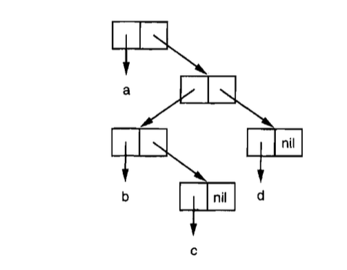
Figure 1: Binary tree
Common Lisp has several built-in functions for use with trees. For example, copy-tree takes a tree and returns a copy of it. It might be defined,
(defun our-copy-tree (tr)
(if (atom tr)
tr
(cons (our-copy-tree (car tr))
(our-copy-tree (cdr tr)))))
Comparing this to the sketch of copy-list.
(defun our-copy-list (lst)
(if (atom list)
lst
(cons (car lst) (our-copy-list (cdr lst)))))
copy-tree copies both the car and cdr of each cons, while copy-list copies only the cdr.
Common Lisp includes functions for operating on trees not because one needs trees as such, but because one needs a way to do something to a list and all the lists within it. For example, suppose we have a list like
(and (integerp x) (zerop (mod x 2)))
and we want to substitute y for x throughtout. It won't do to call substitute, which replaces elements in a sequence,
CL-USER> (substitute 'y 'x '(and (integerp x) (zerop (mod x 2)))) (AND (INTEGERP X) (ZEROP (MOD X 2)))
Because the list has tree elements and none of them are x. What we need here is a subst, which replaces elements in a tree,
CL-USER> (subst 'y 'x '(and (integerp x) (zerop (mod x 2)))) (AND (INTEGERP Y) (ZEROP (MOD Y 2)))
If we define a version of subst, it comes out looking a lot like copy-tree,
(defun our-subst (new old tree)
(if (eql tree old)
new
(if (atom tree)
tree
(cons (our-subst new old (car tree))
(our-subst new old (cdr tree))))))
Functions that operate on trees usually have this form, recursing down both the car and cdr. Such functions are said to be doubly recursive.
4.8. Understanding Recursion
Students learning about recursion are sometimes encouraged to trace all the invocations of a recursive function on a piece of paper. This exercise could be misleading: a programmer defining a recursive function usually does not think explicitly about the sequence of invocations that results from calling it.
If one always had to think of a program in such terms, recursion would be burdensome, not helpful. The advantage of recursion is precisely that it lets us view algorithms in a more abstract way. You can judge whether or not a recursive function is correct without considering all the invocations that result when the function is actually called.
To see if a recursive function does what it's supposed to, all you have to ask is, does it cover all the cases? This is similar to mathematical induction.
For example, here is a recursive function for finding the length of a list:
(defun len (lst)
(if (null lst)
0
(+ (len (cdr lst)) 1)))
We can assure that this function is correct by verifying two things:
- That it works for lists of length 0.
- Given that it works for lists of length \(n\), that it also works for lists of length \(n+1\).
If we can establish both points, then we know that the function is correct for all possible lists.
Our definition obviously satisfies the first point: if 1st is nil , the function immediately returns 0. Now suppose that the function works for lists of length \(n\). We give it a list of length \(n+1\). The definition says that the function will return the len of the cdr of this list, plus 1. The cdr is a list of length \(n\). We know by our assumption that its len is \(n\). Thus the len of the whole list is \(n+1\).
Being able to judge whether or not a recursive function is correct is only the first half of understanding recursion. The other half is being able to write a recursive function that does what you want.
4.9. Sets
Lists are a good way to represent small sets. Every element of a list is a member of the set it represents:
CL-USER> (member 'b '(a b c)) (B C)
When member returns true, instead of simply returning t, it returns the part of list beginning with the object it was looking for. Logically, a cons serves
just as well as t, and this way the function returns more information.
By default, member compares objects using eql. You can override this default by using something called a keyword argument. Many Common Lisp functions take one or more keyword arguments. The unusual thing about these arguments is that they are not matched with the corresponding parameters by their position, but by special tags, called keywords, that must precede them in the call. A keyword is a symbol preceded by a colon.
One of the keyword arguments accepted by member is a :test argument.
If you pass some function as the :test argument in a call to member, then that function will be used to test for equality instead of eql. So if we want to find a member of a list that is equal to a given object, we might say:
CL-USER> (member '(b) '((a) (b) (c))) NIL CL-USER> (member '(b) '((a) (b) (c)) :test #'equal) ((B) (C))
Keyword arguments are always optional. If any are included in a call, they come last; if more than one keyword argument is given, their order doesn't matter.
The other keyword argument accepted by member is a :key argument. By providing this argument you can specify a function to be applied to each element before comparison:
CL-USER> (member 'b '((a b) (b c) (c d))) NIL CL-USER> (member 'b '((a b) (b c) (c d)) :key #'car) ((B C) (C D))
If we want to find an element satisfying an arbitrary predicate - like oddp, which returns true for odd integers - we can use member-if:
CL-USER> (member-if #'oddp '(1 2 3 4)) (1 2 3 4) CL-USER> (member-if #'oddp '(2 3 4)) (3 4)
We could imagine a limited version of member-if being written:
(defun our-member-if (fn lst)
(and (consp lst)
(if (funcall fn (car lst))
lst
(our-member-if fn (cdr lst)))))
The function adjoin is like a conditional cons. It takes an ojbect and a list, and conses the object onto the list only if it is not already a member:
CL-USER> (adjoin 'b '(a b c)) (A B C) CL-USER> (adjoin 'z '(a b c)) (Z A B C)
The operations of set union, intersection, and complement are implemented by the functions union, intersection, and set-difference. These functions expect exactly two lists, but also take the same keyword arguments as member.
CL-USER> (union '(a b c) '(c d e)) (B A C D E) CL-USER> (intersection '(a b c) '(b b c d)) (C B) CL-USER> (set-difference '(a b c d e) '(b e)) (D C A)
Since there is no notion of ordering in a set, these functions do not necessarily bother to preserve the order of elements found in the original lists.
4.10. Sequences
Another way to think of a list is as a series of objects in a particular order. In Common Lisp, sequence include both lists and vectors. This section introduces some of the sequence functions that are especially applicable to lists.
CL-USER> (length '(a b c)) 3
To copy part of a sequence, we use subseq. The second argument (required) is the position of the first element to be included, and the third argument (optional) is the position of the first element not to be included. If the third argument is omitted, the subsequence goes all the way to the end of the original sequence.
CL-USER> (subseq '(a b c d) 1 2) (B) CL-USER> (subseq '(a b c d) 1) (B C D)
The function reverse returns a sequence with the same elements as its argument, but in the reverse order:
CL-USER> (reverse '(a b c d)) (D C B A)
Common Lisp has a built-in sort function called sort. It takes a sequence and a comparision and returns a sequence with the same elements, sorted according to the function:
CL-USER> (sort '(1 3 5 2 4) #'>) (5 4 3 2 1)
You have to be careful when using sort, because it's desctructive. For efficiency reasons, sort is allowed to modify the sequence given to it as an argument. So if you don't want your original sequence modifed, pass a copy.
The function every and some take a predicate and one or more sequences. When given one sequence, they test whether the elements satisfy the predicate:
CL-USER> (every #'oddp '(1 3 5)) T CL-USER> (some #'oddp '(1 2 3)) T
If they are given more than one sequence, teh predicate must take as many arguments as there are sequences, and arguments are drawn one at a time from all the sequences:
CL-USER> (every #'> '(1 3 5) '(0 2 4)) T
If the sequences are of different lengths, the shortest one determines the number of tests performed.
4.11. Stacks
The representation of lists as conses makes it natural to use them as pushdown stacks. This is down so often that Common Lisp provides two macros for the purpose: (push x y) pushes x onto the front of the list y, and (pop x) removes and returns the first element of the list x.
Both are defined in terms of setf. It's easy to translate calls if the arguments are constants or variables.
(push obj lst) ;; is equivalent to (setf lst (cons obj lst)) (pop lst) ;; is equivalent to (let ((x (car lst))) (setf lst (cdr lst)) x)
CL-USER> (setf lst '(b)) (B) CL-USER> (push 'a lst) (A B) CL-USER> lst (A B) CL-USER> (setf lst-copy lst) (A B) CL-USER> (pop lst) A CL-USER> lst (B) CL-USER> lst-copy (A B)
The pushnew macro is a variant of push that uses adjoin instead of cons:
CL-USER> (let ((x '(a b)))
(pushnew 'c x)
(pushnew 'a x)
x)
(C A B)
Here, c gets pushed onto the list, but a, because it is already a member, does not.
4.12. Dotted Lists
The kind of lists that can be built by calling list are more precisely known as proper list. A proper list is either nil, or a cons whose cdr is a proper list. All the lists we've built so for have been proper lists.
Conses are not just for building lists, however. Whenever you need a structure with two fields you can use a cons. You will be able to use car to refer to the first field and cdr refer to the second.
CL-USER> (cons 'a 'b) (A . B)
Because this cons is not a proper list, it is displayed in dot notation. In dot notation, the car and cdr of each cons are shown separated by a period.
A cons that isn't a proper list is called a dotted list. This is not a very good name, because conses that aren't proper lists are usually not meant to represent lists at all: (a . b) is just a two-part data structure.
You could express proper lists in dot notation as well, but when Lisp displays a proper list, it will always use regular list notation:
CL-USER> '(a . (b . (c . nil))) (A B C)
4.13. Assoc-lists
It is also natural to use conses to represent mappings. A list of conses is called an assoc-list or alist. Such a list could represent a set of translations, for example:
CL-USER> (setf trans '((+ . "add") (- . "subtract"))) ((+ . "add") (- . "subtract"))
((+ . "add") (- . "subtract")) CL-USER> (assoc '+ trans) (+ . "add") CL-USER> (assoc '* trans) NIL
If assoc doesn't find what it's looking for, it returns nil.
Like member, the real assoc takes keyword arguments, including :test and :key. Common Lisp also defines an assoc-if, which is to assoc what
member-if is to member.
4.14. Garbage
Lists can be slow for several reasons. They offer sequential instead of random access, so retriving a given element takes longer in list than an array. Intervally, conses tend to be represented as pointers, so travering a list means travering a series of pointers, instead of simply incrementing an index, as in an array. But these two costs can be small compared to the cost of allocating and recycling cons cells.
Automatic memory management is one of Lisp's most valuable features. The Lisp system maintains a segment of memory called the heap. The system keeps track of unused memory in the heap and doles it out as new objects are created. The function cons, for example, returns a newly allocated cons. Allocating memory from the heap is sometimes generically known as consing.
If such memory were never freed, Lisp would run out of space for new objects and have to shut down. So the system must periodically search through the heap, looking for memory that is no longer needed. Memory that is no longer needed is called garbage, and the scavenging operation is called garbage collection, or GC.
Where does garbage come from? Let's create some:
CL-USER> (setf lst (list 'a 'b 'c)) (A B C) CL-USER> (setf lst nil) NIL
Initially we call list , which calls cons, which allocates new cons cells on the heap. In this case we made three. After we set lst to nil, we no longer have any way of reaching the old value of lst, the list (a b c).
Since we have no way of reaching this list, it might as well not exist. Objects that we no longer have any way of reaching are garbage. The system can safely reuse these three cons cells.
This way of managing memory is a great convenience to the programmer. You never have to allocate or deallocate memory explicitly. And this means that you never have to deal with the bugs that come from doing so. Memory leaks and dangling pointers are simply impossible in Lisp.
But, like any technical advance, automatic memory management can work against you are not careful. The costs associated with using and recycling heap space are sometimes refered to simply as the costs of consing. This is reasonable, because unless a program never throws anything away, most of those conses are going to end up as garbage sooner or later.
The trouble with consing is, allocating storage and scavenging memory to reclaim it can be expensive compared to the routine operations of a program. Recent research has produced greatly improved garbage collection algorithms, but consing will always cost something.
Consing is ok in prototypes and experiments, at least. And if you take advantage of the flexibility that lists give you in the early stages of a program, you're more likely to produce something that survives to the later stages.
5. DONE Specialized Data Structures
The preceding chapter discussed the list, Lisp's most versatile data structure. This chapter shows how to use Lisp's other data structures: arrays (including vectors and strings), structures, and hash tables. They may not be as flexible as lists, but they can make access faster, and take up less space.
5.1. DONE Arrays
In Common Lisp, you can make an array with make-array with a list of dimensions as the first argument. To make a \(2\times 3\) array:
CL-USER> (setf arr (make-array '(2 3) :initial-element nil)) #2A((NIL NIL NIL) (NIL NIL NIL)) CL-USER> (setf arr (make-array '(2 3))) #2A((0 0 0) (0 0 0))
The :initial-element argument is optional. If it is provided, the whole array will be initialized to that value.
To retrieve an array element we call aref (array ref). As usual for Common Lisp access functions, aref is zero-indexed:
CL-USER> (aref arr 0 0) 0
To replace some element of an array, we use setf with aref:
CL-USER> (setf (aref arr 0 0) 'hello) HELLO CL-USER> (aref arr 0 0) HELLO
To denote a literal array, we use the #na syntax, where \(n\) is the number of dimention in the array.
CL-USER> #2a((hello nil nil) (nil nil nil)) #2A((HELLO NIL NIL) (NIL NIL NIL))
If the global *print-array* is t, array will be displayed in this form:
CL-USER> (setf arr (make-array '(2 3) :initial-element nil)) #2A((NIL NIL NIL) (NIL NIL NIL)) CL-USER> (setf *print-array* t) T CL-USER> arr #2A((NIL NIL NIL) (NIL NIL NIL))
Otherwise:
CL-USER> (setf *print-array* nil)
NIL
CL-USER> arr
#<(SIMPLE-ARRAY T (2 3)) {1001A60E0F}>
If you want just a one-dimensional array, you can give an integer instead of a list as the first argument to make-array:
CL-USER> (setf vec (make-array 4 :initial-element nil)) #(NIL NIL NIL NIL)
A one-dimensional array is also called a vector. You can create and fill one in a single step by calling vector, which will return a vector of whatever arguments you give it:
CL-USER> (vector "a" 'b 3)
#("a" B 3)
CL-USER> #("a" 'b 3)
#("a" 'B 3)
You can use aref for vector access, but there is a faster function called svref for use with vectors.
CL-USER> vec
#("a" B 3)
CL-USER> (aref vec 0)
"a"
CL-USER> (svref vec 0)
"a"
The "sv" stands for "simple vector", which is what all vectors are by default. A simpel array is one that is neither adjustable, nor displaced, nor has a fill-pointer. Arrays are simple by default. A simple vector is a simple array of one dimention.
5.2. DONE Strings and Characters
Strings are vectors of characters. We denote a constant string as a series of characters surrounded by double-quotes, and an individual character c as #\c.
Each character has a ssociated integer - usually, but not necessarily, the ASCII number. In most implementations, the function char-code returns the number associated with a character, and code-char returns the character associated with a number.
CL-USER> (char-code #\a) 97 CL-USER> (code-char 97) #\a
The function char< (less than), char<= (less than or equal), char= (equal), char>= (greater than or equal), char> (greater than), and char/= (different) compare characters.
CL-USER> (sort "elbow" #'char<) "below"
Because strings are vectors, both sequence functions and array functions work on them. You could use aref to retrieve elements, for example:
CL-USER> (aref "abc" 1) #\b CL-USER> (elt "abc" 1) #\b
but with string you can use the faster char:
CL-USER> (char "abc" 1) #\b
You can use setf with char (or aref) to replace elements:
CL-USER> (let ((str (copy-seq "Acheson")))
(setf (char str 3) #\i)
str)
"Achison"
If you want to compare two strings, you can use the general equal, but there is also a function string-equal that ignores case:
CL-USER> (equal "ming" "ming") T CL-USER> (equal "ming" "Ming") NIL CL-USER> (string-equal "ming" "Ming") T
There are several ways of building strings. The most general is to use format. Calling format with nil as the first argument makes it return as a string what it would have printed:
CL-USER> (format nil "~A or ~A" "true" "false") "true or false"
But if you just want to join several strings together, you can use concatenate, which takes a symbol indicating the type of the result, plus one or more sequences:
CL-USER> (concatenate 'string "do " "not " "worry") "do not worry"
5.3. DONE Sequences
In Common Lisp the type sequence includes both lists and vectors (and therefore strings). Some of the functions that we have been using on lists are actually sequence functions, including remove, length, subseq, reverse, sort, every, and some.
We've already seen four functions for retrieving elements of sequences: nth for lists, aref and svref for vectors, and char for strings. Common Lisp also provides a function elt that works for sequences of any kind:
CL-USER> (elt '(a b c) 1) B
For sequences of specific types, the access functions we've already seen should be faster, so there is no point in using elt except in code that is supposed to work for sequences generally.
Many sequence functions take one or more keyword arguments from the standard set listed in this table:
| PARAMETER | PURPOSE | DEFAULT |
| :key | a function to apply to each element | identity |
| :test | the test function for comparison | eql |
| :from-end | if true, work backwards | nil |
| :start | postion at which to start | 0 |
| :end | position, if any, at which to stop | nil |
One function that takes the full set is position, which returns the position of an element in a sequence, or nil if it is not found.
CL-USER> (position #\a "fantasia") 1 CL-USER> (position #\a "fantasia" :start 3 :end 5) 4 CL-USER> (position #\a "fantasia" :from-end t) 7 CL-USER> (position 'a '((c d) (a b)) :key #'car) 1 CL-USER> (position '(a b) '((a b) (c d))) NIL CL-USER> (position '(a b) '((a b) (c d)) :test #'equal) 0 CL-USER> (position 3 '(1 0 7 5) :test #'<) 2 CL-USER> (position 3 '(1 0 7 5) :test #'>) 0
To find an element satisfying a predicate of one argument, we use position-if. It takes a function and a sequence, and returns the position of the first element satisfying the function:
CL-USER> (position-if #'oddp '(2 3 4 5)) 1
It takes all the keyword arguments except :test.
There are functions similar to member and member-if for sequences. They are, respectively, find (which takes all the keyword arguments) and find-if (which takes all except :test):
CL-USER> (find #\a "cat") #\a CL-USER> (find-if #'characterp "ham") #\h
Unlike member and member-if, they return only the object they were looking for.
The function remove-duplicates preserves only the last of each occurrence of any element of a sequence:
CL-USER> (remove-duplicates "abcdeabcd") "eabcd"
This function takes all the keyword arguments listed in the preceding table.
The function reduce is for boiling down a sequence into a single value. It takes at least two arguments, a function and a sequence. The function must be a function of two arguments. In the simplest case, it will be called initially with the first two elements, and thereafter with successive elements as the second argument, and the value it returned last time as the first. The value returned by the last call is returned as the value of the reduce.
CL-USER> (reduce #'intersection '((a b c d e) (c d e) (c d x y z))) (C D)
5.4. DONE Structures
A structure can be considered as a deluxe kind of vector. Suppose you have to write a program that kept track of a number of rectangular solids. You might consider representing then as vectors of three elements: height, width, and depth. Your program would be easier to read if, instead of using raw svref, you defined functions like
(defun block-height (b) (svref b 0))
and so on. You can think of a structure as a vector in which all these kinds of functions get defined for you. Using filed name to replace the position in a vector.
To define a structure, we use defstruct. In the simplest case we just give the name of the structure and the name of the fields:
(defstruct point x y)
This defines a point to be a structure with two fields, x and y. It also implicitly defined the functions make-point, point-p, copy-point, point-x, and point-y.
Lisp programs could write Lisp programs. This is one of the most conspicuous examples. When you call defstruct, it automatically writes code defining several other functions. With macros you will be able to do the same thing yourself.
Each call to make-point will reuturn a new point. We can specify the values of individual fields by giving the corresponding keyword arguments:
CL-USER> (defstruct point x y) POINT CL-USER> (setf p (make-point :x 0 :y 0)) #S(POINT :X 0 :Y 0)
The access functions for point fields are defined not only to retrieve values, but to work with setf.
CL-USER> (point-x p) 0 CL-USER> (setf (point-y p) 2) 2 CL-USER> p #S(POINT :X 0 :Y 2)
Defining a structure also defines a type of that name. Each point will be of type point, then structure, then atom, then t.
CL-USER> (point-p p) T CL-USER> (typep p 'point) T
We can specify default values for structure fields by enclosing the field name and a default expression in alist in the original definition:
(defstruct polemic
;; field: type. with default value read from input.
(type (progn
(format t "What kind of polemic was it? ")
(read)))
;; field: effect. with default value nil.
(effect nil))
If a call to make-polemic specifies no initial values for these fields, they will be set to the values of the corresponding expressions:
CL-USER> (make-polemic) What kind of polemic was it? scathing #S(POLEMIC :TYPE SCATHING :EFFECT NIL)
We can also control things like the way a structure is displayed, and the prefix used in the name of the access functions it creates. Here is a more elaborate definition for point that does both:
(defstruct (point (:conc-name p)
(:print-function print-point))
(x 0)
(y 0))
(defun print-point (p stream depth)
(format stream "#<~A,~A>" (px p) (py p)))
The :conc-name argument specifies what should be concatenated to the front of the field name to make access functions for them. By default it was point-; now it will be simply p. Not using the default makes you code a little less readable, so you would only want to do this kind of thing if you are goint to be using the acess functions constantly.
The :print-function is the name of the function that should be used to print a point when it has to be displayed - e.g. by the toplevel. This function must take three arguments: the structure to be printed, the place where it is to be printed, and a third argument that can usually be ignored.
The function print-point will display points in an abbreviated form:
CL-USER> (make-point) #<0,0>
5.5. DONE Hash Tables
Lists could be used to represent both sets and mappings. When either grow to a substantial size (say 10 elements) it will be faster to use hash tables. You can create a hash table by calling make-hash-table, which has no required arguments:
CL-USER> (setf ht (make-hash-table))
#<HASH-TABLE :TEST EQL :COUNT 0 {1003A5F6F3}>
A hash table, like an assoc-list, is a way of associating pairs of objects. To retrieve the value associated with a given key, we call gethash with a key and a hash table. By default, gethash return nil when there is no value associated with the key.
CL-USER> (gethash 'color ht) NIL NIL
Here we see for the first time one of the distinctive features of Common Lisp: an expression can return multiple values. The function gethash returns two. The first is the value associated with the key, and the second says whether the hash table has any value stored under that key. Because the second value is nil, we know that the first nil was returned by default, not because nil was explicitly associated with color.
Most implementations will display all the return values of a call made at the toplevel, but code that expects only one return value will get just the first.
To associate a value with a key, we use setf with gethash:
CL-USER> (setf (gethash 'color ht) 'red) RED CL-USER> (gethash 'color ht) RED T
The second return value proves that now we're getting a real stored object and not just a default.
The objects stored in a hash table or used as keys can be any type.
You can use hash table instead of lists to represent sets. When the sets become large, lookups and deletions should be much faster with hash tables. To add a member to a set represented as a hash table, setf the gethash of it to t:
CL-USER> (setf fruit (make-hash-table))
#<HASH-TABLE :TEST EQL :COUNT 0 {1003D34283}>
CL-USER> (setf (gethash 'apricot fruit) t)
T
CL-USER>
Then to test for membership you just call gethash:
CL-USER> (gethash 'apricot fruit) T T
To remove an object from a set, you would call remhash, which removes an entry from a hash table:
CL-USER> (remhash 'apricot fruit) T
The return value shows whether there was an entry to remove; in this case there was.
There is an iteration function for hash tables: maphash, which takes a function of two arguments and a hash table. The function will be called on every key/value pair in the table, in no particular order:
CL-USER> (setf (gethash 'shape ht) 'spherical
(gethash 'size ht) 'giant)
GIANT
CL-USER> (maphash #'(lambda (k v)
(format t "~A = ~A~%" k v))
ht)
COLOR = RED
SHAPE = SPHERICAL
SIZE = GIANT
NIL
Hash tables can accommodate any number of elements, because they are expanded when they run out of space. If you want to ensure that a hash table starts with room for a particular number of elements, you can give the optional :size argument to make-hash-table. There are two reasons to do this: because you know the hash table is going to be huge, and you want to avoid expanding it; or because you know the hash table is going to be small, and you don't want to waste memory. The :size argument specifies not the number of spaces in the hash table, but the number of elements, on the average, it will be able to accommodate before being expanded. So
CL-USER> (make-hash-table :size 5)
#<HASH-TABLE :TEST EQL :COUNT 0 {10040B0633}>
would return a hash table intended to hold up to five elements.
Like any structure involved in lookups, hash tables must have some notion of equality for keys. By default they use eql, but you can specify that a hash table should use eq, equal, or equalp instead by providing the optional :test argument:
CL-USER> (make-hash-table :test #'equal)
#<HASH-TABLE :TEST EQUAL :COUNT 0 {10042B07D3}>
6. DONE Control
What the operators in this chapter have in common is that they all violate the evaluation rule. They let you direct the course that evaluation will take through the text of a program.
6.1. DONE Blocks
Common Lisp has three basic operators for creating blocks of code: progn, block, and tagbody.
The expressions within progn are evaluated in order and the value of the last is returned:
CL-USER> (progn
(format t "a")
(format t "b")
(+ 11 12))
ab
23
Since only the value of the last expression is returned, the use of progn (or any block) implies side-effects.
A block is like progn with a name and an emergency exit. The first argument should be a symbol. This becomes the name of the block. At any point within the body, you can halt evaluation and return a value immediately by using return-from with the block name:
CL-USER> (block head
(format t "Here we go.")
(return-from head 'idea)
(format t "We'll never see this."))
Here we go.
IDEA
Calling return-from allows your code to make a sudden but graceful exit from anywhere in a body of code. The second argument to return-from is returned as the value of the block named by the first. Expressions after the return-from are not evaluated.
There is also a return macro, which returns its argument as the value of an enclosing block named nil:
CL-USER> (block nil
(return 27))
27
Many Common Lisp operators that take a body of expressions implicitly enclose the body in a block named nil. All iteration constructs do, for example:
CL-USER> (dolist (x '(a b c d e))
(format t "~A " x)
(if (eql x 'c)
(return 'done)))
A B C
DONE
The body of a function defined with defun is implicitly enclosed in a block with the same name as the function:
(defun foo () (return-from foo 27))
Outside of an explicit or implicit block, neither return-from nor return will work.
The third basic block construct is tagbody, within which you can use gotos. Atoms appearing in the body are interpreted as labels, giving such a label to go sends control to the expression following it. Here is an exceedingly ugly piece of code printing out the numbers from 1 to 10:
(tagbody
(setf x 0)
top
(setf x (+ x 1))
(format t "~A " x)
(if (< x 10)
(go top)))
This operator is mainly something that other operators are built upon, not something you would use yourself. Most iteration operators have an implicit tagbogy, so it's possible (thought rarely desirable) to use labels and go within their bodies.
How do you decide which block construct to use? Nearly all the time you'll use progn. If you want to allow for sudden exits, use block instead. Most programmers will never use tagbody explicitly.
6.2. DONE Context
Another operator to group expression is let. It takes a body of code, but also allows us to establish new variables for use within the body:
CL-USER> (let ((x 7)
(y 2))
(format t "Number")
(+ x y))
Number
9
An operator like let creates a new lexical context. Within this context there are two new variables and variables from outer contexts may thereby become invisible.
Conceptually, a let expression is like a function call. The preceding let expression is exactly equivalent to:
((lambda (x y) (format t "Number") (+ x y)) 7 2)
Any questions you have about let should be dealt with by passing the buck to lambda, because entering a let is conceptually equivalent to doing a function call.
One of the thing this model makes clear is that the value of one let created variable can't depend on other variables create by the say let. For example, if we tried to say:
(let ((x 2)
(y (+ x 1)))
(+ x y))
then the x in (+ x 1) would not be the x established in the previous line, because the whole expression is equivalent to
((lambda (x y) (+ x y)) 2 (+ x 1))
Here it's obvious that (+ x 1) passed as an argument to the function cannot refer to the parameter x within the function.
So what if you do want the value of one new variable to depend on the value of another variable established by the same expression? In that case you would use a variant called let*:
CL-USER> (let* ((x 1)
(y (+ x 1)))
(+ x y))
3
A let* is functionally equivalent to a series of nested lets. This particular example is equivalent to:
(let ((x 1))
(let ((y (+ x 1)))
(+ x y)))
In both let and let*, initial values default to nil. Such variables need not be enclosed within lists:
CL-USER> (let (x y)
(list x y))
(NIL NIL)
The destructuring-bind macro is a generalization of let. Instead of single variables, it takes a pattern - one or more variables arranged in the form of a tree - and binds them to the corresponding parts of some actual tree. For example:
CL-USER> (destructuring-bind (w (x y) . z) '(a (b c) d e)
(list w x y z))
(A B C (D E))
It causes an error if the tree given as the second argument doesn't match the pattern given as the first.
6.3. DONE Conditionals
The simplest conditional is if; all the others are built upon it. The simplest after if is when, which takes an expression and a body of code. The body will be evaluated if the test expression returns true.
(when (oddp that)
(format t "Hmm, that's good.")
(+ that 1))
;; is equivalent to
(if (oddp that)
(progn
(format t "Hmm, that's good.")
(+ that 1)))
The opposite of when is unless, it takes the same arguments, but the body will be evaluated only if the test expression returns false.
The mother of all conditionals (in both senses) is cond, which brings two new advantages: it allows multiple conditions, and the code associated with each has an implicit progn. It's intended for use in situations where we would otherwise have to make the third argument of an if another if. For example, this pseudo member:
(defun our-member (obj lst)
(if (atom lst)
nil
(if (eql (car lst) obj)
lst
(our-member obj (cdr lst)))))
;; could also be defined as
(defun our-member (obj lst)
(cond ((atom lst) nil)
((eql (car lst) obj) lst)
(t (our-member obj (cdr lst)))))
In fact, a Common Lisp implementation will probably implement cond by translating the latter into the former.
In general, cond takes zero or more arguments. Each one must be a list consisting of a condition followed by zero or more expressions. When the cond expression is evaluated, the conditions are evaluated in order until one of them returns true. When it does, the expressions associated with it are evaluated in order, and the value of the last is returned as the value of the cond. If there are no expressions after the successful condition, the value of the condition itself is returned.
CL-USER> (cond (99)) 99
Since a cond clause with a conditon of t will always succeed, it is conventional to make the final clause have t as the condition. If no clause succeeds, the cond returns nil, but it is usually bad style to take advantage of this return value.
When you want to compare a value against a series of constants, there is case. For example:
(defun month-length (mon)
(case mon
((jar mar may jul aug oct dec) 31)
((apr jun sept nov) 30)
(feb (if (leap-year) 29 28))
(otherwise "unkown moth")))
A case expression begins with an argument whose value will be compared against the keys in each clause. Then come zero or more clauses, each one beginning with either a key, or a list of keys, followed by zero or more expressions. The keys are treated as constants; they will not be evaluated. The value of the first argument is compared (using eql) to the key/s at the head of each clause. If there is a match, the expressions in the rest of that clause are evaluated, and the value of the last is returned as the value of the case.
CL-USER> (month-length 'jar) 31 CL-USER> (month-length 'september) "unkown moth"
The default clause may have the key t or otherwise. If no clause succeeds, or the successful clause contains only keys, then the case returns nil.
CL-USER> (case 99 (99)) NIL
The typecase macro is similar to case, except that the keys in each clause should be type specifiers, and the value of the first argument is compared to the keys using typep instead of eql.
CL-USER> (typecase 1
(number t))
T
6.4. DONE Iteration
The basic iteration operator is do. Since do contains both an implicit block and an implicit tagbody, it's possible to use return, return-from, and go within the body of a do.
The first argument to do had to be a list of specifications for variables, each possibly of the form
(variable initial update)
The initial and update forms are optional. If the update form is omitted, the variable won't update on successive iterations. If the initial form is also omitted, the variable will be initially nil.
When more than one variable is to be updated, the question arises, if an update form refers to a variable that has its own update form, does it get the updated value or the value from the previous iteration? With do, it gets the latter:
CL-USER> (let ((x 'a))
(do ((x 1 (+ x 1))
(y x x))
((> x 5))
(format t "(~A ~A) " x y)))
(1 A) (2 1) (3 2) (4 3) (5 4)
NIL
On each iteration, x gets its previous value plus 1; y also get the previous value of x.
There is also a do*, which has the same relation to do as let* does to let. Any initial or update form can refer to a variable from a previous clause, and it will get the current value:
CL-USER> (do* ((x 1 (+ x 1))
(y x x))
((> x 5))
(format t "(~A ~A) " x y))
(1 1) (2 2) (3 3) (4 4) (5 5)
NIL
Besides do and do* there are several special-purpose iteration operators. To iterate over the elements of a list, we can use dolist:
CL-USER> (dolist (x '(a b c d) 'done)
(format t "~A " x))
A B C D
DONE
The third expression within the initial list will be evaluated and returned as the value of the dolist when iteration terminates. It defaults to nil.
Similar in spirit is dotimes, which for some n iterates over the integers from O to n-1:
CL-USER> (dotimes (x 5 x)
(format t "~A " x))
0 1 2 3 4
5
As with dolist, the third expression in the initial list is optional and defaults to nil. Notice that it can refer to the iteration variable.
The function mapc is like mapcar but does not cons up a new list a return value, so the only reason to use it is for side-effects. Like mapcar, It is also more flexible than dolist, because it can traverse multiple lists in parallel:
CL-USER> (mapc #' (lambda (x y)
(format t "~A ~A " x y))
'(hip flip slip)
'(hop flop slop))
HIP HOP FLIP FLOP SLIP SLOP
(HIP FLIP SLIP)
It always returns its second argument.
6.5. DONE Multiple Values
In Common Lisp, an expression can return zero or more values. Multiple values allow a function that calculates several things to return them without having to build a structure to contain them all. For example, the built-in get-decoded-time returns the current time in nine values: seconds, minutes, hours, day, month, year, day of the week, daylight savings time flag and time zone.
CL-USER> (get-decoded-time) 44 50 16 5 2 2024 0 NIL 5
Multiple values also make it possible to have lookup functions that can distinguish between finding nil and failing to find something. This is why gethash returns two values. Because it uses the second value to indicate success or failure, we can store nil in a hash table just like any other value.
CL-USER> (let ((ht (make-hash-table)))
(gethash 'color ht))
NIL
NIL
CL-USER> (let ((ht (make-hash-table)))
(setf (gethash 'color ht) nil)
(gethash 'color ht))
NIL
T
The values function returns multiple values. It returns exactly the values you give it as arguments:
CL-USER> (values 'a nil (+ 1 2)) A NIL 3
If a values expression is the last thing to be evaluated in the body of a function, its return values become those of the function. Multiple values are passed on intact through any number of returns:
CL-USER> ((lambda ()
((lambda ()
(values 1 2)))))
1
2
However, if something is expecting only one value, all but the first will be discarded:
CL-USER> (let ((x (values 1 2)))
x)
1
By using values with no arguments, it's possible to return no values. In that case, something expecting one will get nil:
CL-USER> (values)
; No value
CL-USER> (let ((x (values)))
x)
NIL
To receive multiple values, we use multiple-value-bind:
CL-USER> (multiple-value-bind (x y z) (values 1 2 3)
(list x y z))
(1 2 3)
CL-USER> (multiple-value-bind (x y z) (values 1 2)
(list x y z))
(1 2 NIL)
CL-USER> (multiple-value-bind (x y z) (values 1 2 3 4)
(list x y z))
(1 2 3)
If there are more variables than values, the leftover ones will be nil. If there are more values than variables, the extra values will be discarded.
You can pass on multiple values as the arguments to a second function using multiple-value-call:
CL-USER> (multiple-value-call #'+ (values 1 2 3)) 6
There is also a function multiple-value-list:
CL-USER> (multiple-value-list (values 1 2 3)) (1 2 3)
which is like using multiple-value-call with #'list as the first argument.
6.6. DONE Aborts
You can use return to exit from a block at any point. Sometimes we want to do something even more drastic, and transfer control back through several function calls. To do this we use catch and throw. A catch expression takes a tag, which can be any kind of object, followed by a body of expressions.
(defun super ()
(catch 'abort
(sub)
(format t "We'll never see this.")))
(defun sub ()
(throw 'abort 99))
The expressions are evaluated in order, as if in a progn. At any point within this code or code called by it, a throw with the corresponding tag will cause the catch expression to return immediately:
CL-USER> (super) 99
A throw with a given tag will pass control through (and thereby kill) any catches with other tags in order to reach the one with the matching tag. If there is no pending catch with the right tag, the throw causes an error.
Calling error also interrupts execution, but instead of transferring control to another point higher up in the calling tree, it transfers control to the Lisp error handler.
Sometimes you want code to be proof against interruptions like throws and errors. By using an unwind-protect, you can ensure that such interruptions won't leave your program in an inconsistent state. An unwind-protect takes any number of arguments and returns the value of the first. However, the remaining expressions will be evaluated even if the evaluation of the first is interrupted.
CL-USER> (setf x 1)
1
CL-USER> (catch 'abort
(unwind-protect
(throw 'abort 99)
(setf x 2)))
99
CL-USER> x
2
Here, even though the throw sends control back to the waiting catch, unwind-protect ensures that the second expression gets evaluated on the way out. Whenever certain actions have to be followed by some kind of cleanup or reset, unwind-protect may be useful.
7. DONE Functions
7.1. DONE Global Functions
The predicate fboundp tells whether there is a function with a given symbol as its name. If a symbol is the name of a function, symbol-function will return it:
CL-USER> (fboundp '+) #<FUNCTION +> CL-USER> (symbol-function '+) #<FUNCTION +>
By setting the symbol-function of some name to a function,
(setf (symbol-function 'add2)
#'(lambda (x) (+ x 2)))
we thereby define a new global function, which we can use as if we had defined it with defun.
CL-USER> (add2 1) 3
In fact, defun does little more than translate something like
(defun add2 (x) (+ x 2))
into the setf expression above. Using defun makes programs look nicer, and may help the compiler, but strictly speaking you don't need it to write programs.
By making the first argument to defun a list of the form (setf f), you define what happens when the first argument to setf is a call to f.
;; define primo as a synonym for `car`
CL-USER> (defun primo (lst)
(car lst))
PRIMO
CL-USER> (primo '(a b c))
A
CL-USER> (defun (setf primo) (val lst)
(setf (car lst) val))
(SETF PRIMO)
CL-USER> (let ((x (list 'a 'b 'c)))
(setf (primo x) 480)
x)
(480 B C)
;; This show that you define what happens when the first
;; argument to `setf` is a call to `f`.
CL-USER> (defun mytest (lst) (car lst))
MYTEST
CL-USER> (defun (setf mytest) (val lst)
(setf (car lst) (list val val)))
(SETF MYTEST)
CL-USER> (mytest '(a b c))
A
CL-USER> (let ((x (list 'a 'b 'c)))
(setf (mytest x) 480)
x)
((480 480) B C)
In the definition of a function whose name is of the form (setf f), the first parameter represents the new value, and the remaining parameters represent arguments to f.
It's not necessary to define primo in order to define (setf primo), but such definitions usually come in pairs.
Since strings are Lisp expressions, there is no reason they can't appear within bodies of code. A string by it self does not have side-effects, and so doesn't make any difference unless it's the last expression. If you make a string the first expression in the body of a function defined with defun,
(defun foo (x) "I am document string." x)
then that string will become the function's documentation string. The documentation for a globally defined function can be retrieved by calling documentation:
;; (documentation obj doc-type) CL-USER> (documentation 'foo 'function) "I am document string."
7.2. DONE Local Functions
Functions defined via defun or setf of symbol-function are global functions. Like global variables you have access to them anywhere. It is also possible to define local functions, which like local variables, are only accessible within a certain context.
Local functions can be defined with labels, which is a kind of let for functions. Its first argument is a list of definitions of new local functions. Each element of the list is of the form
(name parameters . body)
Within the ramainder of the labels expression, calling name is equivalent to calling (lambda parameters . body).
CL-USER> (labels ((add10 (x) (+ x 10))
(consa (x) (cons 'a x)))
(consa (add10 3)))
(A . 13)
The analogy to let breaks down in one respect. Local functions defined by a labels expression can refer to any other functions defined there, including themselves. So it's possible to define recursive local functions this way:
CL-USER> (labels ((len (lst)
(if (null lst)
0
(+ (len (cdr lst)) 1))))
(len '(a b c)))
3
7.3. DONE Parameter Lists
With prefix notation, + could take any number of arguments. To write such functions, we need to use something called a rest parameter.
If we insert the token &rest before the last variable in the parameter list of function, then when the function is called, this variable will be set to a list of all the remaining arguments. Now we can see how funcall would be written in terms of apply. It might be defined as:
(defun our-funcall (fn &rest args) (apply fn args))
Arguments could be omitted and would default to certain values. Such parameters are called optional parameters. By contract, ordinary parameters are sometime called required parameters. If the symbol &optinal occurs in the parameter list of a function, then all the arguments after it are optional and default to nil:
CL-USER> (defun say (hello &optional name)
(list hello name))
SAY
CL-USER> (say 'hello)
(HELLO NIL)
We give an explicit default by enclosing it in a list with the parameters.
CL-USER> (defun say (hello &optional (name 'world))
(list hello name))
SAY
CL-USER> (say 'hello)
(HELLO WORLD)
The default for an optional parameter need not be a constant. It can be any Lisp expression. If this expression isn't a constant, it will be evaluated anew each time a default is needed.
A keyword parameter is a more flexible kind of optional parameter. If you put the symbol &key in a parameter list, then all the parameters after it are optional. Moreover, when the function is called, these parameters will be identified not by their position, but by symbolic tags that precede them:
CL-USER> (defun keylist (a &key x y (z 40))
(list a x y z))
KEYLIST
CL-USER> (keylist 1 :y 2)
(1 NIL 2 40)
CL-USER> (keylist 1 :y 3 :x 2)
(1 2 3 40)
Keywords and their associated arguments can be collected in rest parameters and passed on to other functions that are expecting them. For example, we could define adjoin as:
(defun our-adjoin (obj lst &rest args)
(if (apply #'member obj lst args)
lst
(cons obj lst)))
Since adjoin takes the same keyword arguments as member, we just collect them in a rest argument and pass them on to member.
Section 6.2 introduced the destructuring-bind macro. In the general case, each subtree in the pattern given as the first argument may be as complex as the parameter list of a function:
CL-USER> (destructuring-bind ((&key w x) &rest y) '((:w 3) a)
(list w x y))
(3 NIL (A))
CL-USER> (destructuring-bind ((&key w x) &rest y) '((:w 3 :x 4) a b c d )
(list w x y))
(3 4 (A B C D))
7.4. DONE Utilities
Lisp consists mostly of Lisp functions, just like the ones you can define yourself. This is a useful feature to have in a programming language: you don't have to modify your ideas to suit the language, because you can modify the language to suit your ideas. If you find yourself wishing that Common Lisp included a certain function, you can write it yourself, and it will be just as much a part of the language as + or eql.
Experienced Lisp programmers work bottom-up as well as top-down. While they're writing their program down toward the language, they also build the language up toward their program. This way, language and program meet sooner, and more neatly.
Operators written to augment Lisp are called utilities. As you write more Lisp programs, you will find that you develop a collection of them, and that many of the utilities you write during one project will turn out to be useful in the next one.
Professional programmers often find that the program they're working on now has a great deal in common with some program they wrote in the past. It is this feeling that makes the idea of software reuse so attractive. Somehow reuse has become associated with object-oriented programming. But software does not have to be object-oriented to be reusable — this is obvious when we look at programming languages (that is, compilers), which are the most reusable software of all.
The way to get reusable software is to write programs bottom-up, and programs don't have to be object-oriented to be written bottom-up. In fact, the functional style seems even better adapted for writing reusable software. Consider sort. You are unlikely ever to have to write your own sort routines in Common Lisp; sort is so fast and so general that it would not be worth the trouble. That's reusable software.
You can do the same thing in your own programs by writing utilities.
(defun single? (lst)
"Returns true when its argument is
is a list of one element."
(and (consp lst) (null (cdr lst))))
(defun append1 (lst obj)
"Adds an element to the end of the
list."
(append lst (list obj)))
(defun map-int (fn n)
"Takes a function and an integer n,
and returns a list of the results of
calling the function on the integers
from 0 to n-1."
(let ((acc nil))
(dotimes (i n)
(push (funcall fn i) acc))
;; nreverse do the same thing as
;; reverse, but is more efficient.
(nreverse acc)))
(defun filter (fn lst)
"Takes a function and a list, and
return all the non-nil values returned
by the function as it is applied to the
elements of the list."
(let ((acc nil))
(dolist (x lst)
(let ((val (funcall fn x)))
(if val
(push val acc))))
(nreverse acc)))
(defun most (fn lst)
"Returns the element of a list with
the highest score according to some
scoring function. It returns two values,
the winning element and its score."
(if (null lst)
(values nil nil)
(let* ((wins (car lst))
(max (funcall fn wins)))
(dolist (obj (cdr lst))
(let ((score (funcall fn obj)))
(when (> score max)
(setf wins obj
max score))))
(values wins max))))
The usage of the above utilities is as follows:
CL-USER> (single? '(a))
T
CL-USER> (single? '())
NIL
CL-USER> (single? '(a b))
NIL
CL-USER> (append1 '(a b c) 'd)
(A B C D)
CL-USER> (map-int #'identity 10)
(0 1 2 3 4 5 6 7 8 9)
CL-USER> (map-int #'(lambda (x) (* x x)) 10)
(0 1 4 9 16 25 36 49 64 81)
CL-USER> (map-int #'(lambda (x) (random 100)) 10)
(92 44 95 5 97 58 43 99 37 68)
CL-USER> (filter #'(lambda (x)
(and (evenp x) (+ x 10)))
'(1 2 3 4 5 6 7))
(12 14 16)
CL-USER> (most #'length '((a b) (a b c) (a)))
(A B C)
3
The last three functions all take functions as arguments. Lisp makes it convenient to pass functions as arguments, and that's one of the reasons it is so well suited to bottom-up programming. A successful utility must be general, and it's easier to abstract out the general when you can pass the specific as a functional argument.
7.5. DONE Closures important
A function can be returned as the value of an expression just like any other kind of object. Here is a function that takes one argument and return a function to combine arguments of that type:
(defun combiner (x)
(typecase x
(number #'+)
(list #'append)
(t #'list)))
On top of this we can build a general combination function
(defun combine (&rest args)
(apply (combiner (car args))
args))
which takes arguments of any type and combines them in a way appropriate to their type. To simplify the example, we assume that the arguments will all be of the same type.
CL-USER> (combine 2 3)
5
CL-USER> (combine '(a b) '(c d))
(A B C D)
CL-USER> (combine "hello" "world")
("hello" "world")
Lexical variable are only valid within the context where they are defined. Along with this restriction comes the promise that they will continue to be valid for as long as something is using the context.
If a function is defined within the scope of a lexical variable, it can continue to refer to that variable, even if it is returned as a value outside the context where the variable was created. Here we create a function that adds 3 to its argument:
CL-USER> (setf fn (let ((i 3))
#'(lambda (x) (+ x i))))
#<FUNCTION (LAMBDA (X)) {54A3E49B}>
CL-USER> (funcall fn 2)
5
When a function refers to a variable defined outside it, it's called a free variable. A function that refers to a free lexical variable is called a closure. The variable must persist as long as the function does.
A closure is a combination of a function and an environment. Closures are created implicitly whenever a function refers to something from the surrounding lexical environment. This happens quietly in a function like the following one, but it is the same idea:
(defun add-to-list (num lst)
(mapcar #'(lambda (x)
(+ x num))
lst))
This function takes a number and a list, and returns a list of the sum of each element and the number. The variable num within the lambda expression is free, so in cases like this we're passing a closure to mapcar.
A more conspicuous example would be a function that returned a different closure each time it was called. The following function returns an adder:
(defun make-adder (n)
#'(lambda (x)
(+ x n)))
It takes a number, and returns a function that adds that number to its argument:
CL-USER> (setf add3 (make-adder 3))
#<FUNCTION (LAMBDA (X) :IN MAKE-ADDER) {10026F8FEB}>
CL-USER> (funcall add3 2)
5
CL-USER> (setf add27 (make-adder 27))
#<FUNCTION (LAMBDA (X) :IN MAKE-ADDER) {100274B84B}>
CL-USER> (funcall add27 2)
29
We can even make several closures share variables. Here we define two functions that share a counter.
(let ((counter 0))
(defun our-reset ()
(setf counter 0))
(defun our-stamp ()
(setf counter (+ counter 1))))
Such a pair of functions might be used to create time-stamps. Each time we call our-stamp we get a number one higher than the previous, and by calling our-reset we can set the counter back to zero:
CL-USER> (list (our-stamp) (our-stamp) (our-reset) (our-stamp)) (1 2 0 1)
You could do the same thing with a global counter, but this way the counter is protected from unintended references.
Common Lisp has a built-in function complement that takes a predicate and returns the opposite predicate. For example:
CL-USER> (mapcar (complement #'oddp)
'(1 2 3 4 5 6))
(NIL T NIL T NIL T)
With closures such a function is easy to write:
(defun our-complement (f)
#'(lambda (&rest args)
(not (apply f args))))
Closures are one of the uniquely wonderful things about Lisp. They open the door to programming techniques that would be inconceivable in other languages.
7.6. DONE Dynamic Scope
Section 3.10 distinguished between local and global variables. The real distinction here is between lexical variables, which have lexical scope, and special variables, which have dynamic scope. But it's almost the same distinction, because local variables are nearly always lexical variables, and global variables are always special variables.
Under lexical scope, a symbol refers to the variable that has the name in the context where the symbol appears. Local variables have lexical scope by default. So if we define a function in an environment where there is a variable called x:
(let ((x 10))
(defun foo ()
x))
then the x in the body will refer to that variable, regardless of any x that might exist where foo is called:
CL-USER> (let ((x 20))
(foo))
10
With dynamic scope, we look for a variable in the environment where the function is called, not in the environment where it was defined. To cause a variable to have dynamic scope, we must declare it to be special in any context where it occurs. If we defined foo instead as
(let ((x 10))
(defun foo ()
(declare (special x))
x))
then the x within the function will no longer refer to the lexical variable existing where the function was defined, but will refer to whatever speical x exists at the time the function is called:
CL-USER> (let ((x 20))
(declare (special x))
(foo))
20
A declare can begin any body of code where new variables are created. The special declaration is unique, in that it can change the way a program behaves.
Global variables established by calling setf at the toplevel are implicitly special:
CL-USER> (setf x 30) 30 CL-USER> (foo) 30
Within a file of code, it makes a program clearer if you don't rely on the implicit special declaration, and instead use defparameter.
Where is dynamic scope useful? Usually it is used to give some global variable a new value temporarily. For example, there are 11 global variables that control the way objects are printed, including print-base. If you want to display numbers in hexadecimal (base 16), you can do it by rebinding print-base:
CL-USER> (let ((*print-base* 16))
(princ 32))
20
32
Two things are displayed here: the output generated by princ, and the value it returns. They represent the same number, displayed first in hexadecimal because *print-base* was 16 when it was printed, and the second time in decimal because, outside the let expression, *print-base* reverts to its previous value, 10.
CL-USER> (defparameter *ourglobal* 10)
*OURGLOBAL*
CL-USER> *ourglobal*
10
CL-USER> (let ((*ourglobal* 20))
*ourglobal*)
20
7.7. DONE Compilation
Compilations make the evaluation of expressions faster.
Common Lisp functions can be compiled either individually or by file. You can check whether a function is compiled by passing it to compiled-function-p:
CL-USER> (defun foo (x)
(+ x 1))
FOO
CL-USER> (compiled-function-p #'foo)
T
You can also give the name of foo to compile to compile a function.
(compile 'foo)
The usual way to compile Lisp code is not to compile functions individually, but to compile whole files with compile-file. This function takes a filename and creates a compiled version of the source file — typically with the same base name but a different extension. When the compiled file is loaded, compiled-function-p should return true for all the functions defined in the file.
When one function occurs within another, and the containing function is compiled, the inner function should also be compiled. So when make-adder is compiled, it will return compiled functions:
(defun make-adder (n)
#'(lambda (x)
(+ x n)))
CL-USER> (compile 'make-adder) MAKE-ADDER NIL NIL CL-USER> (compiled-function-p (make-adder 2)) T
7.8. DONE Using Recursion
Recursion plays a greater role in Lisp than in most other languages. There seem to be three main reasons why:
- Functional programming. Recursive algorithms are less likely to involve side-effects.
- Recursive data structure. Lisp's implicit use of pointers makes it easy to have recursively defined data structures. The most common is the list: a list is either
nil, or a cons whose cdr is a list. - Elegance. Lisp programmers care a great deal about the beauty of their programs, and recursive algorithms are often more elegant than their iterative counterparts.
4.8 pointed out, you don't have to think about all the invocations of a recursive function if you want to judge whether or not is correct. The same is true if you want to write a recursive function. If you can describe a recursive solution to a problem, it's usually straightforward to translate your solution into code. To solve a problem using recursion, you have to do two things:
- You have to show how to solve the problem in the general case by breaking it down into a finite number of similar, but smaller, problems.
- You have to show how to solve the smallest version of the problem — the base case — by some finite number of operations.
If you can do this, you're done. You know that a finite problem will get solved eventually, because each recursion makes it smaller, and the smallest problem takes a finite number of steps.
Some algorithms are most naturally expressed in recursion and some are not (which means most natually in iteration). Sometimes it may not be obvious which form will be more natural until you try to write the code.
If you're concerned with efficiency, there are two more issues to consider.
- Tail-recursion.
- The obvious recursive algorithm is not always the most efficient.
The classic example is the Fibonacci function. It is defined recursively,
- \(\text{Fib}(0) = \text{Fib(1) = 1}\)
- \(\text{Fib}(n) = \text{Fib}(n-1) + \text{Fib}(n-2)\)
but the literal translation of this definition,
(defun fib (n)
(if (<= n 1)
1
(+ (fib (- n 1))
(fib (- n 2)))))
is appalliying inefficient. The same computations are done over and over. If you ask for (fib 10), the function computes (fib 9) and (fib 8). But to compute (fib 9), it has to compute (fib 8) again, and so on.
How often does this kind of thing happen in practice? Very rarely — that's why all textbooks use the same example — but it is something one should be aware of.
8. DONE Input and Output
Common Lisp has powerful I/O facilities. For input, along with the usual functions for reading characters, we get read, which includes a complete parser. For output, along with the usual functions for writing characters, we get format, which is almost a language in its own right. This chapter introduces all the basic concepts.
There are two kinds of streams, character streams and binary streams.
8.1. DONE Character Streams
Character streams are Lisp objects representing sources and/or destinations of characters. To read from or write to a file, you open it as a stream. But streams are not identical with files. When you read or print at the toplevel, you also use a stream. You can even create streams that read from or write to strings.
By default, input is read from the stream *standard-input*. The default place for output is *standard-output*. Initially they will probably be the same place: a stream representing the toplevel.
Already we have seen read and format used to read from and print to the toplevel. The former takes an optional argument, which should be a stream, and defaults to *standard-input*. The first argument to format can also be a stream, but when it is t, the output is sent to *standard-output*. So what we have been doing so far is using the defaults. We could do the same I/O operations on any stream.
A pathname is a portable way of specifying a file. A pathname has six components: host, device, directory, name, type, and version. You can make one by calling make-pathname with one or more of the corresponding keyword arguments. In the simplest case, you could just specify the name and let the rest of the pathname default:
CL-USER> (setf path (make-pathname :name "myfile")) #P"myfile"
The basic function for opening a file is open. It takes a pathname (You can give a string instead of a pathname, but this is not portable.) and a large number of optional keyword arguments, and if successful, returns a stream that points to the file.
You specify how you intend to use a stream when you create it. The :direction argument signals whether you are going to write to the stream, read from it, or both. The three corresponding values are :input, :output, and :io. If thestream is used for output,the :if-exists argument says what to do if the destination file already exists; usually it should be :supersede. So to create a stream on which you can write to the file "myfile", you might say:
CL-USER> (setf str (open path :direction :output
:if-exists :supersede))
#<SB-SYS:FD-STREAM for "file /Users/mingmingli/info/information-technology/programming-languages/common-lisp/myfile" {1004512DC3}>
The printed representation of streams is implementation-dependent.
Now if we give this stream as the first argument to format, it will print to the stream instead of the toplevel:
CL-USER> (format str "Something~%") NIL
If we look at the file at this point, the output may or may not be there. Some implementations save up output to write in chunks (SBCL). It may not all appear until we close the stream:
CL-USER> (close str) T
Always close a file when you finished using it; nothing is guaranteed about its contents until you do.
If we just want to read from a file, we open a stream with :direction :input:
CL-USER> (setf str (open path :direction :input))
#<SB-SYS:FD-STREAM for "file /Users/mingmingli/info/information-technology/programming-languages/common-lisp/myfile" {100188CCC3}>
CL-USER> (read-line str)
"Something"
NIL
CL-USER> (close str)
T
CL-USER>
Much of the time one does not use open and close directly to do file I/O. The with-open-file macro is often more convenient. Its first argument should be a list containing a variable name followed by arguments you might give to open. After this it takes a body of code, which is evaluated with the variable bound to a stream created by passing the remaining arguments to open. Afterward the stream is automatically closed. So our entire file-writing operation could be expressed:
CL-USER> (with-open-file (str path :direction :output
:if-exists :supersede)
(format str "Something~%"))
NIL
The with-open-file macro puts the close within an unwind-protect, so the file is guaranteed to get closed, even if an error interrupts the evaluation of the body.
8.2. DONE Input
The two most popular input functions are read-line and read.
read-line reads all the characters up to a newline, returning them in a string. It takes an optional stream argument; if the stream is omitted, it will default to *standard-input*:
CL-USER> (progn
(format t "Plase enter your name: ")
(read-line))
Plase enter your name: Mingming Li
"Mingming Li"
NIL
This is the function to use if you want verbatim input. The second return value is true only if read-line ran out of input before encountering a newline.
In the general case, read-line takes four optional arguments:
- a stream;
- an argument to tell whether or not to cause an error on encountering end-of-file;
- what to return instead if the previous argument is
nil; - a fourth argument that can usually be ignored.
So to display the contents of a file at the toplevel, we might use the following function:
(defun pseudo (file)
(with-open-file (str file :direction :input)
(do ((line (read-line str nil 'eof) (read-line str nil 'eof)))
((eql line 'eof))
(format t "~A~%" line))))
CL-USER> (pseudo "myfile") Something NIL
If you want input parsed into Lisp objects, use read. This function reads exactly one expression, and stops at the end of it. So it could read less than a line or more than a line. And of course what it reads has to be valid Lisp syntax.
If we use read at the toplevel, it will let us use as many newlines as we want within an expression:
CL-USER> (read) (a b c) (A B C)
On the other hand, if we type several expressions on a single line, read will stop processing characters after the first, leaving the remaining characters to be picked up by whatever reads next from this stream. So if in response to the prompt printed by ask-number we type several expressions on a line, the following will happen:
(defun ask-number ()
(format t "Please enter a number. ")
(let ((val (read)))
(if (numberp val)
val
(ask-number))))
CL-USER> (ask-number) Please enter a number. a b Please enter a number. Please enter a number. 1 1
Two successive prompts are printed on the second line. The first call to read returns a, which is not a number, so the function asks again for a number. But the first read only read up to the end of a. So the next call to read returns b, causing another prompt.
You may want to avoid using read directly to process user input. The preceding function would be better off if it used read-line to get what the user typed, then called read-from-string on the resulting string. This function takes a string and returns the first expression read from it:
CL-USER> (read-from-string "a b c") A 2
It also returns a second value, a number indicating the position in the string at which it stopped reading.
(read-from-string string &optional eof-error-p eof-value &key start end preserve-whitespace)
- string
- the string to read from
- eof-error-p
- whether an end-to-end should cause an error
- oef-value
- if not, what to return instead
- start
- the start position to read from
- end
- the end position in reading
All these input functions are defined in terms of the primitive read-char, which reads a single character. It takes the same four optional arguments as read and read-line. Common Lisp also defines a function called peek-char, which is like read-char but does not remove the character from the stream.
8.3. DONE Output
The three simplest output functions are prin1, princ, and terpri. For all three the last argument is an optional stream argument, which defaults to *standard-output*.
The difference between prin1 and princ is roughly that prin1 generates output for programs, and princ generates output for people. So, for example, prin1 prints the double-quotes around a string, and princ doesn't:
CL-USER> (prin1 "hello") "hello" "hello" CL-USER> (princ "hello") hello "hello"
The function terpri just prints a newline:
CL-USER> (terpri) NIL
The most general output function is format. This function can be used for almost all output. It takes a stream, a format string, and zero or more additional arguments. The format string may contain format directives, which are preceded by a ~ (tilde). Some format directives act as placeholders in the string. Their places will be taken by the representations of the arguments given after the format string.
If we give t as the first argument, output is sent to *standard-output*. If we give nil, format returns as a string what it would have printed.
Depending on one's point of view, format is either amazingly powerful or horribly complex. There are a large number of format directives, only a few of which most programmers will ever use. Two of the most commonly used format directives are ~A and ~%. (It doesn't matter whether you say ~a or ~A, but the latter form is more common because it makes the format directive stand out.) A ~A is a placeholder for a value, which will be printed as if by princ. A ~%, represents a newline.
CL-USER> (format nil "hello, ~A,~% how are you doing?" "Mingming Li") "hello, Mingming Li, how are you doing?"
The ~S format directive is just like ~A, but prints objects as if by prin1 , rather than princ:
CL-USER> (format nil "~S ~A" "M" "M") "\"M\" M" CL-USER> (format t "~S ~A" "M" "M") "M" M NIL
Format directives can take arguments. ~F, which is used for printing right-justified floating-point numbers, can take up to five:
- The total number of characters to be printed. Defaults to the exact length of the number.
- The number of digits to print after the decimal. Defaults to all of them.
- The number of digits to shift the decimal point to the left (thereby effectively multiplying the number by 10). Defaults to none.
- The character to print instead of the number if it is too long to fit in the space allowed by the first argument. If no character is specified, an over-long number will be printed using as much space as it needs.
- The character to print to the left before the digits start. Defaults to a blank.
CL-USER> (format nil "~10,2,0,'*,' F" 3.1415926) " 3.14"
This is the original number rounded to 2 decimal places, with the decimal point shifted left 0 places, right-justified in a field of 10 characters, padded on the left by blanks. Notice that a character given as an argument is written as '*, not the usual #\* . Since the number fit in 10 characters, the fourth argument didn't have to be used.
All these arguments are optional. To use the default you can simply omit the corresponding argument. If all we want to do is print a number rounded to two decimal places, we can say:
CL-USER> (format nil "~,2,,,F" 3.1415926) "3.14"
You can also omit a series of trailing commas, so the more usual way to write the preceding directive would be:
CL-USER> (format nil "~,2F" 3.1415926) "3.14"
8.4. DONE Macro Characters
A macro character is a character that gets special treatemet from read. For example, a lowercase a is ordinarily handled just like a lowercase a, but a left parenthesis is something different: it tells Lisp to begin reading a list.
A macro character or combination of macro characters is also known as a read-macro (read-macros). Many of Common Lisp's predefined read-macros are abbreviations. Quote, for example: as an expression like 'a is read, it is expanded by the reader into a list, (quote a). When you type quoted expressions into the toplevel, they are evaluated as soon as they are read, so ordinarily you never see this transformation. You can make it visible by invoking read explicitly:
CL-USER> 'a A CL-USER> (car (read-from-string "'a")) QUOTE
Quote is unusual for a read-macro in that it's expressed in a single-character. With a limited character set, you can only have so a few one-character read-macros; most of the read-macros in Common Lisp are expressed using two or more characters.
Such read-macros are called dispatching read-macros, and the first character is called the dispatching character. All the predefined dispatching read-macros use the sharp sign, #, as the dispatching character. For example, #' is an abbreviation for (function ...).
Other dispatching read-macros we've seen include #(...), which yields a vector; #nA(...) which yields an array; #\, which yields a character; and #S(n ... ) , which yields a structure. When objects of each of these types are displayed by prin1 or (format with ~S), they are displayed using the corresponding read-macros. This means that you can write such objects out and read them back in:
CL-USER> (vectorp (read-from-string (format nil "~S" #(1 2)))) T CL-USER> (arrayp (read-from-string (format nil "~S" #2((1 2) (3 4))))) T CL-USER> (characterp (read-from-string (format nil "~S" #\a))) T CL-USER> (defstruct point x y) POINT CL-USER> (make-point) #S(POINT :X NIL :Y NIL) CL-USER> (point-p (read-from-string (format nil "~S" #S(point :X nil :Y nil)))) T
Of course, what we get back is not the same objct, but a new one with the same elements.
Not all objects are displayed in a distinct, readable form. Both functions and hash tables, for example, tend to be displayed as #<...>. In fact, #< is also a read-macro, but one that exists specifically to cause an error if it is encountered by read. Functions and hash tables can't be written out and read back in, and this read-macro ensures that users will have no illusions on this point. (Lisp couldn't just use sharp-quote to represent functions, because sharp-quote by itself offers no way to represent a closure.)
When you're defining your own representations for things (the print-functions of structures, for example), you should keep this principle in mind. Either use a representation that can be read back in, or use #<...>.
9. DONE Symbols
9.1. DONE Symbol Names
Chapter 3 described symbols as variable names existing as objects in their own right. But the range of possible Lisp symbols is broader than the range of variable names allowed in most languages. In fact, a symbol can have any string as its name. You can get the name of a symbol by calling symbol-name:
CL-USER> (symbol-name 'abc) "ABC"
Notice that the name of this symbol is all uppercase letters. By default Common Lisp converts all alphabetic characters in a symbol's name into uppercase as they are read. This means that, by default, Common Lisp is not case-sensitive:
CL-USER> (eql 'aBc 'Abc) T CL-USER> (CaR '(a b c)) A
There is a special syntax for referring to symbols whose names contain whitespace or other things that might otherwise be significant to the reader. Any sequence of characters between vertical bars is treated as a symbol. You can put anything in the name of a symbol this way:
CL-USER> (list '|Lisp 2.29| '|| '|abc| '|ABC|) (|Lisp 2.29| || |abc| ABC)
When the name of such a symbol is read, there is no case conversion, and macro characters are treated just like other characters.
So which symbols can you refer to without using vertical bars? Essentially, any symbol whose name is neither a number nor contains characters significant to the reader. A quick way to find out if you could refer to a symbol without using vertical bars is to see how Lisp prints it. If Lisp represents a symbol without vertical bars, as it did the last symbol in the list above, then you can too.
Remember that the vertical bars are a special syntax for denoting symbols. They are not part of the symbol's name:
CL-USER> (symbol-name '|a b c|) "a b c"
If you want to use a vertical bar in the name of a symbol, you can do it by putting a backslash before the bar.
9.2. DONE Property Lists
In Common Lisp every symbol has a property-list, or plist. The function get takes a symbol and a key of any type, and returns the value associated with that key in the symbol's property list (It uses eql to compare keys):
CL-USER> (get 'rabbit 'color) NIL CL-USER> (setf (get 'rabbit 'color) 'red) RED CL-USER> (get 'rabbit 'color) RED
The function symbol-plist returns the property list of a symbol:
CL-USER> (setf (get 'rabbit 'weight) '20kg) 20KG CL-USER> (symbol-plist 'rabbit) (WEIGHT 20KG COLOR RED)
9.3. DONE Symbols Are Big
Symbols are created implicitly when we type their names, and when they are displayed the name is all we see. But there is more to symbols.
In fact a symbol is a substantial object, more like the kind of structure that might be defined by defstruct. A symbol can have a name, a home package, a value as a variable, a value as a function, and a property list. Figure 2 shows how symbols are represented internally.
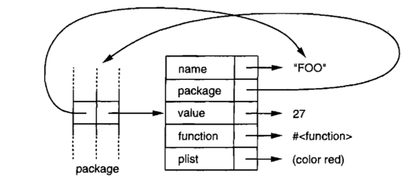
Figure 2: Structure of a symbol
Few programs use so many symbols that it would be worth using something else to save space. But it is worth bearing in mind that symbols are real objects, and not just names.
9.4. DONE Creating Symbols
Section 9.1 showed how to get from symbols to their names. It's also possible to go in the other direction, from strings to symbols. This gets a little more complicated, because we have to introduce the topic of packages.
Conceptually, packages are symbols-tabels, mapping names to symbols. Every ordinary symbol belongs to a paticular package. A symbol that belongs to a package is said to be interned in that package. Functions and variables have symbols as their names. Packages enforce modularity by restricting which symbols are accessible, and thus, which functions and variables one can refer to.
Most symbols are interned when they are read. The first time you type the name of a new symbol, Lisp will create a new symbol object and intern it in the current package (which by default will be common-lisp-user). But you can also intern a symbol by giving a string and an optional package argument to intern:
CL-USER> (intern "RANDOM-SYMBOL") RANDOM-SYMBOL NIL
CL-USER> *package* #<PACKAGE "COMMON-LISP-USER">
The package argument defaults to the current package, so the preceding expression returns the symbol in the current package whose name is the string "RANDOM-SYMBOL", creating such a symbol if it doesn't already exist. The second return value shows whether the symbol already existed; in this case, it didn't.
Not all symbols are interned. It can sometimes be useful to have an uninterned symbol, for the same reason that it can be useful to have an unlisted phone number. Uninterned symbols are called gensyms.
9.5. DONE Multiple Packages
Larger programs are often divided up into multiple packages. If each part of a program is in its own package, then someone working on one part of the program will be able to use a symbol as the name of a function or variable without worrying that the name is already used elsewhere.
In languages that don't provide a way to define multiple namespaces, the programmers working on a big project usually work out some convention to ensure that they don't use the same names. For example, the programmer writing the display code might only use names beginning with disp_, while the programmer writing the math code only used names beginning with math_. So if the math code included a function to do fast Fourier transforms, it might be called math_fft.
Packages just provide a way to do this automatically. If you define your functions in a separate package, you can use whatever names you like. Only symbols that you explicitly export will be visible in other packages, and there they will usually have to be preceded (or qualified) by the name of the package that owns them.
For example, suppose a program is divided into two packages, math and disp. If the symbol fft is exported by the math package, then code in the disp package will be able to refer to it as math:fft. Within the math package, it will be possible to refer to it as simply fft.
Here is what you might put at the top of afilecontaining a distinct package of code:
(defpackage "MY-APPLICATION" (:use "COMMON-LISP" "MY-UTILITIES") (:nicknames "APP") (:export "WIN" "LOSE" "DRAW")) (in-package my-application)
The defpackage defines a new package called my-application. It uses two other packages, common-lisp and my-utilities, which means that symbols exported by these packages will be accessible without package qualifiers. Most packages will use common-lisp - you don't want to have to qualify the names of the built-in Lisp operators and variables.
The my-application package itself exports just three symbols: win, lose, and draw. Since the call to defpackage gave my-application the nickname app, code in other packages will be able to refer to them as e.g. app:win.
The defpackage if followed by an in-package that makes the current package be my-application. All the unqualified symbols in the rest of the file will be interned in my-application - unless there is another in-package later on. When a file has been loaded, the current package is always reset to the value it had before the load began.
CL-USER> *package* #<PACKAGE "COMMON-LISP-USER"> CL-USER> (load "/Users/mingmingli/info/information-technology/programming-languages/common-lisp/practice/my-application.lisp") T CL-USER> *package* #<PACKAGE "COMMON-LISP-USER">
9.6. DONE Keywords
Symbols in the keyword package (known as keywords) have two unique properties: they always evaluate to themselves, and you can refer to them anywhere simply as :x, instead of keyword:x. When keyword parameters were first introduced in 7.3, it might have seemed more natural for the call to read (member '(a) '((a) (z)) test: #' equal) rather than (member '(a) '((a) (z)) :test #'equal). Now we see why the unnatural-looking second form is actually the correct one. The colon prefixed to test is just to identify it as a keyword.
Why use keywords instead of ordinary symbols? Because they are accessible anywhere. A function that takes symbols as arguments should usually be written to expect keywords. For example
(defun noise (animal)
(case animal
(:dog :woof)
(:cat :meow)
(:pig :oink)))
If it had been written to use ordinary symbols, it would only work when called from the package in which it was defined, unless the keys were exported as well.
(defpackage "MY-APPLICATION"
(:use "COMMON-LISP")
(:nicknames "APP")
(:export "NOISE" "NOISE2"))
(in-package my-application)
(defun noise (animal)
(case animal
(:dog :woof)
(:cat :meow)
(:pig :oink)))
(defun noise2 (animal)
(case animal
('dog 'woof)
('cat 'meow)
('pig 'oink)))
CL-USER> (my-application:noise :cat) :MEOW CL-USER> (my-application:noise2 'cat) NIL
9.7. DONE Symbols and Variables
One potentially confusing thing about Lisp is that symbols are related to variables in two very different ways.
When a symbol is the name of a special variable, the value of the variable is stored in a field within the symbol (2). The symbol-value function refers to that field, so we have a direct connection between a symbol and the value of the special variable it represents.
With lexical variables, things are completely different. A symbol used as a lexical variable is just a placeholder. The compiler will translate it into a reference to a register or a location in memory. In the eventual compiled code, there will be no trace of the symbol (unless it is retained somewhere for use by the debugger). So of course there is no connection between symbols and the values of the lexical variables they represent; by the time there is a value, the symbol is gone.
10. DONE Numbers
Common Lisp has a rich set of numeric types and its features for manipulating numbers compare favorably with any language.
10.1. DONE Types
Common Lisp provides four distinct types of numbers: integer,floating-point numbers, ratios, and complex numbers. Most of the functions described in this chapter work on numbers of any type. A few, explicitly noted, accept all but complex numbers.
An integer is written as a string of digits: 2001. A floating-point number can be written as a string of digits containing a decimal point, 253.72, or in scientific notation, 2.5372e2. A ratio is written as a fraction of integers: 2/3. And the complex number a+bi is written as #c(a b), where a and b are any two real numbers of the same type.
The predicates integerp, floatp, and complexp return true for numbers of the corresponding types.
Figure 3 shows the hierarchy of numeric types.
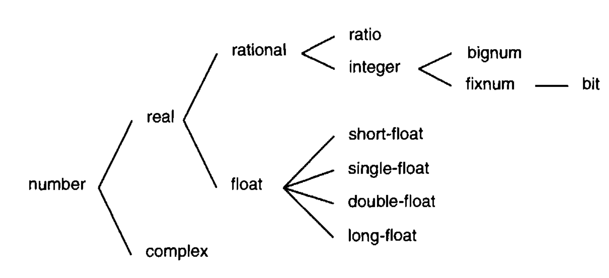
Figure 3: Numeric types
Here are some general rules of thumb for determining what kind of number a computation will return:
- If a numeric function receives one or more floating-point numbers as arguments, the return value will be a floating-point number (or a complex number with floating-point components). So
(+ 1.0 2)evaluates to3.0, and(+ #c(0 1.0) 2)evaluates to#c(2.0 1.0). - Ratios that divide evenly will be converted into integers. So
(/ 10 2)will return5. - Complex numbers whose imaginary part would be zero will be converted into reals. So
(+ #c(1 -1) #c(2 1))evaluates to3.
Rules 2 and 3 apply to arguments as soon as they are read, so:
CL-USER> (list (ratiop 2/2) (complexp #c(1 0))) (NIL NIL)
(defun ratiop (x)
(and (typep x 'rational)
(> (denominator x) 1)))
10.2. DONE Conversion and Extraction
Common Lisp provides functions for converting and extracting components of the four kinds of numbers.
The function float converts any real number to a floating-point numbers:
CL-USER> (mapcar #'float '(1 2/3 .5)) (1.0 0.6666667 0.5)
Reducing numbers to integers is not necessarily conversion, because it can involve some loss of information. The function truncate returns the integer component of any real number:
CL-USER> (truncate 1.3) 1 0.29999995
The second return value is the original argument minus thefirstreturn value. The difference of .00000005 is due to the inherent inexactitude of floating-point computation.
The functions floor, ceiling and round also derive integers from there arguments. The function round returns the nearest integer to its argument. When the argument is equidistant from two integers, Common Lisp, like many programming languages, does not round up. Instead it rounds to the nearest even digit.
CL-USER> (floor 1.5) 1 0.5 CL-USER> (ceiling 1.5) 2 -0.5 CL-USER> (mapcar #'round '(-2.5 -1.5 1.5 2.5)) (-2 -2 2 2) CL-USER> (round 1.5) 2 -0.5
The function mod returns the modulus and rem returns the remainder.
CL-USER> (mod 13 4) 1 CL-USER> (rem 13 4) 1 CL-USER> (mod -13 4) 3 CL-USER> (rem -13 4) -1
The function signum returns either 1, 0, or -1, depending on whether its argument is positive, zero, or negative.
CL-USER> (mapcar #'signum '(-2 -0.0 0.0 0 .5 3)) (-1 -0.0 0.0 0 1.0 1)
In some implementations -0.0 may exist in its own right, as above. Functionally it makes little difference whether it does or not, because in numeric code -0.0 behaves exactly like 0.0.
The function abs returns the absolute value of its argument.
CL-USER> (abs 1) 1 CL-USER> (abs -1) 1
Ratios and complex numbers are conceptually two-part structures. The functions numerator and denominator return the corresponding components of a ratio or integer. (If the number is an integer, the former returns the number itself and the latter returns 1.) The functions realpart and imagpart return the real and imaginary components of any number. (If the number isn't complex, the former returns the number itself and the latter returns zero.)
CL-USER> (numerator 1/3) 1 CL-USER> (denominator 1/3) 3 CL-USER> (numerator 10) 10 CL-USER> (denominator 10) 1 CL-USER> (realpart #c(2 3)) 2 CL-USER> (imagpart #c(2 3)) 3 CL-USER> (realpart 5) 5 CL-USER> (imagpart 5) 0
The function random takes an integer or floating-point number. An expression of the form (random n) returns a number greater than or equal to zero and less than n, and of the same type as n.
CL-USER> (random 10) 6 CL-USER> (random 10) 9 CL-USER> (random 10) 5 CL-USER> (random 10.0) 2.6471841 CL-USER> (random 10.0) 6.1633406 CL-USER> (random 10.0) 1.9508076
10.3. DONE Comparison
The predicate = returns true when its arguments are numerically equal — when the difference between them is zero. It is less strict than eql, which also requires its arguments to be of the same type.
CL-USER> (= 1 1.0) T CL-USER> (eql 1 1.0) NIL
The predicates for comparing numbers are < (less than) , <= (less than or equal), = (equal), >= (greater than or equal), > (greater than), and /= (different). All of them take one or more arguments. With one argument they all return t. For all except /=, a call with three or more arguments,
(<= w x y z)
is equivalent to the conjunction of a binary opeator applied to successive pairs of arguments:
(and (<= w x) (<= x y) (<= y z))
Since /= returns true if no two of its arguments are =, the expresssion
(/= w x y z)
is equivalent to
(and (/= w x)
(/= w y)
(/= w z)
(/= x y)
(/= x z)
(/= y z))
The specialized predicates zerop, plusp and minusp take one argument and return true if it is =, > and < zero, respectively. These functions do not overlap. Although is preceded by a negative sign, it is = to 0,
CL-USER> (list (minusp -0.0) (zerop -0.0)) (NIL T)
The predicates oddp and evenp apply only to integers. The former is true only of odd integers, and the latter only of even ones.
CL-USER> (list (oddp 1) (oddp 2) (evenp 1) (evenp 2)) (T NIL NIL T)
Of the predicates described in this section, only =, /=, and zerop apply to complex numbers.
The functions max and min return, respectively, the maximum and minimum of their arguments. Both require at least one:
CL-USER> (max 1 2 3 4 5) 5 CL-USER> (min 1 2 3 4 5) 1
10.4. DONE Arithmetic
The functions for addition and subtraction are + and -. Both can take any number of arguments, including none, in which case they return 0. An expression of the form (- n) returns —n. An expression of the form
(- x y z)
is equivalent to
(- (- x y) z)
There are also two functions 1+ and 1-, which return their argument plus 1 and minus 1 respectively. The name 1- is a bit misleading, because (1- x) returns x - 1, not 1 - x.
The macros incf and decf increment and decrement their argument, respectively. An expression of the form (incf x n) is similar in effect to (setf x (+ x n)), and (decf x n) to (setf x (- x n)). In both cases the second argument is optional and defaults to 1.
The function for multiplication is *. It takes any number of arguments. When given no arguments it returns 1. Otherwise it returns the product of its arguments.
The division function, / , expects at least one argument. A call of the form (/ n) is equivalent to (/ 1 n):
CL-USER> (/ 3) 1/3
while a call of form
(/ x y z)
is equivalent to
(/ (/ x y) z)
When given two integers, / will return a ratio if the first is not a multiple of the second:
CL-USER> (/ 22 21) 22/21 CL-USER> (float 22/21) 1.0476191
10.5. DONE Exponentiation
To find \(x^n\) we call (expt x n) and to find \(log_n x\) we call (log x n):
CL-USER> (expt 2 10) 1024 CL-USER> (log 1024 2) 10.0
To find e^x there is a distinct function exp:
CL-USER> (exp 2) 7.389056
To find a natural logarithm you can just you log, because the second argument defaults to e:
CL-USER> (log 7.389056) 2.0
To find roots you can tell expt with a ratio as the second argument:
CL-USER> (expt 27 1/3) 3.0
but for finding square roots the function sqrt should be faster:
CL-USER> (sqrt 9) 3.0
10.6. DONE Trigonometric Functions
The constant pi is a floating-point representation of π. Its precision is implementation-dependent. The functions sin, cos, and tan find the sine, cosine, and tangent, respectively, of angles expressed in radians:
CL-USER> (let ((x (/ pi 4)))
(list (sin x) (cos x) (tan x)))
(0.7071067811865475d0 0.7071067811865476d0 0.9999999999999999d0)
These functions all take negative and complex arguments.
The functions asin, acos and atan implement the inverse of sine, cosine, and tangent.
Hyperbolic sine, cosine, and tangent are implemented by sinh, cosh, and tanh, respectively. Their inverses are likewise asinh, acosh, and atanh.
10.7. DONE Representation
Common Lisp imposes no limit on the size of integers. Small integers fit in one word of memory and are called fixnum. When a computation produces an integer too large to fit in one memory word, Lisp switches to a representation (a bignum) that uses multiple words of memory. So the effective limit on the size of an integer is imposed by physical memory, not by the language.
The constants most-positive-fixnum and most-negative-fixnum indicate the largest magnitudes an implementation can represent without having to use bignums.
CL-USER> most-positive-fixnum 4611686018427387903 CL-USER> most-negative-fixnum -4611686018427387904
The predicate typep takes an argument and a type name and returns true if the argument is of the specified type. So,
CL-USER> (typep 1 'fixnum) T CL-USER> (typep (1+ most-positive-fixnum) 'bignum) T
The limits on the values of floating-point numbers are implementation-dependent. Common Lisp provides up to four types of floating-point numbers: short-float, single-float, double-float, and long-float. Implementations are not required to use distinct formats for all four types.
CL-USER> most-positive-short-float 3.4028235e38 CL-USER> most-positive-single-float 3.4028235e38 CL-USER> most-positive-double-float 1.7976931348623157d308 CL-USER> most-positive-long-float 1.7976931348623157d308
The general idea is that a short float is supposed to fit in a single word, that single and double floats are supposed to provide the usual idea of single- and double-precision floating-point numbers, and that long floats can be something really big, if desired. But an implementation could perfectly well implement all four the same way.
You can specify what format you want a floating-point number to be by substituting the letters s, f, d, or l for the e when a number is represented in scientific notation. (You can use uppercase too, and this is a good idea for long floats, because l looks so much like 1.) So to make the largest representation of 1.0 you would write 1L0.
CL-USER> 1S0 1.0 CL-USER> 1F0 1.0 CL-USER> 1D0 1.0d0 CL-USER> 1L0 1.0d0
Sixteen global constant mark the limits of each format in a given implementation. Their names are of the format m-s-f where m is most or least, s is positive or negative, and f is one of the four type of float.
CL-USER> most-positive-long-float 1.7976931348623157d308
11. DONE Macros
Lisp code is expressed as lists, which are Lisp objects. This made it possible to write programs that would write programs. This chapter shows how to cross the line from expressions to code.
11.1. DONE Eval
The function eval takes an expression, evaluates it, and returns its value:
CL-USER> (eval '(+ 1 2 3)) 6 CL-USER> (eval '(format t "Hello")) Hello NIL
The following function implements something very like the toplevel:
(defun our-toplevel ()
(do ()
(nil)
(format t "~%> ")
(print (eval (read)))))
For this reason the toplevel is also known as a read-eval-print loop (REPL).
Calling eval is one way to cross the line between lists and code. However it is not a very good way:
- It's inefficient.
evalis handed a raw list, and either has to compile it on the spot, or evaluate it in an interpreter. Either way is much slower than running compiled code. - The expression is evaluated with no lexical context. If you call
evalwithin alet, for example, the expressions passed toevalcannot refer to variables established by thelet.
There are much better ways to take advantage of the possibility of generating code. Indeed, one of the only places where it is legitimate to use eval is in something like a toplevel loop.
For programmers the main value of eval is probably as a conceptual model for Lisp. We can imagine it defined as a big cond expression:
(def our-eval (expr env)
(cond ...
((eql (car expr) 'quote) (cadr expr))
...
(t (apply (symbol-function (car expr))
(mapcar #'(lambda (x)
(our-eval x env))
(cdr exprt))))))
Most expressions are handled by the default clause, which says to get the function referred to in the car, evaluate all the arguments in the cdr, and return the result of applying the former to the latter.
However, we can't do this for an expression like (quote x), since the whole point of quote is to preserve its argument from evaluation. So we have to have a distinct clause just for quote. That's what a special operator is, essentially: an operator that has to be implemented as a special case in eval.
The function coerce and compile provide a similar bridge from lists to code. You can coerce a lambda expression into a function:
CL-USER> (coerce '(lambda (x) x) 'function) ; type conversion
#<FUNCTION (LAMBDA (X)) {54B4288B}>
and if you give nil as the first argument to compile, it will compile a lambda expression given as the second argument:
CL-USER> (compile nil '(lambda (x) (+ x 2)))
#<FUNCTION (LAMBDA (X)) {54B2743B}>
NIL
NIL
CL-USER> (compile '2+ '(lambda (x) (+ x 2)))
2+
NIL
NIL
CL-USER> (2+ 3)
5
Since coerce and compile can take lists as arguments, a program could build new functions on the fly. However, this is a drastic measure, comparable to calling eval, and should be viewed with the same suspicion.
The trouble with eval, coerce, and compile is not that they cross the line between lists and code, but that they do it at run-time. Crossing the line is expensive. Doing it at compile-time is good enough in most cases, and costs nothing when your program runs. The next section shows how to do this.
11.2. DONE Macros important
The most common way to write programs that write programs is by defining macros. Macros are operators that are implemented by transformation. You define a macro by saying how a call to it should be translated. This translation, called macro-expansion, is done automatically by the compiler. So the code generated by your macros becomes an integral part of your program, just as if you had typed it in yourself.
Macros are usually defined by calling defmacro. A defmacro looks a lot like a defun, but instead of defining the value a call should produce, it defines how a call should be translated. For example, a macro to set its argument to nil might be defined as follows:
(defmacro nil! (x) (list 'setf x nil))
This defines a new operator call nil!, which will take one argument. A call of the form (nil! a) will be translated into (setf a nil) before being compiled or evaluated. So if we type (nil! x) into the toplevel,
CL-USER> (nil! x) NIL CL-USER> x NIL
it is exactly equivalent to typing the expansion, (setf x nil).
To test a function, we call it, but to test a macro, we look at its expansion. The function macroexpand-1 takes a macro call and generates its expansion:
CL-USER> (macroexpand-1 '(nil! x)) (SETF X NIL) T
A macro call can expand into another macro call. When the compiler (or the toplevel) encounters a macro call, it simply keeps expanding it until it is no longer one.
The secret to understanding macros is to understand how they are implemented. Underneath, they're just functions that transform expressions. For example, if you pass an expression of the form (nil! a) to this function
(lambda (expr)
(apply #'(lambda (x)
(list 'setf x nil))
(cdr expr)))
it will return (setf a nil) . When you use defmacro, you're defining a function much like this one. All macroexpand-1 does, when it sees an expression whose car is known to be the name of a macro, is pass the expression to the corresponding function.
11.3. DONE Backquote
The backquote read-macro makes it possible to build lists from templates. Backquote is used extensively in macro definitions. While a regular quote is a close-quote (apostrophe) on the keyboard, a backquote is an open-quote. It's called "backquote" because it looks like a normal quote tilted backwards.
Used by itself, a backquote is equivalent to a regular quote:
CL-USER> `(a b c) (A B C)
Like a regular quote, a backquote alone protects its argument from evaluation.
The advantage of backquote is that, within a backquoted expression, you can use , (comma) and ,@ (comma-at) to turn evaluation back on. If you prefix a comma to something within a backquoted expression, it will be evaluated. Thus we can use backquote and comma together to build list templates:
CL-USER> (setf a 1 b 2) 2 CL-USER> `(a is ,a and b is ,b) (A IS 1 AND B IS 2)
By using backquote instead of a call to list, we can write macro definitions that look like the expansions they will produce. For example, nil! could be defined as:
(defmacro nil! (x) `(setf ,x nil))
Comma-at is like comma, but splices its argument (which should be a list). Instead of the list itself, its elements are inserted in the template:
CL-USER> (setf lst '(a b c)) (A B C) CL-USER> `(lst is ,lst) (LST IS (A B C)) CL-USER> `(its elements are ,@lst) (ITS ELEMENTS ARE A B C)
Comma-at is useful in macros that have rest parameters representing, for example, a body of code. Suppose we want a while macro that will evaluate its body so long as an initial test expression remains true:
CL-USER> (let ((x 0))
(while (< x 10)
(princ x)
(incf x)))
0123456789
NIL
We can define such a macro by using a rest parameter to collect a list of the expressions in the body, then using comma-at to splice this list into the expansion:
(defmacro while (test &rest body)
`(do ()
((not ,test))
,@body))
11.4. DONE Macro Design
Writing macros is a distinct kind of programming, with its own unique aims and problems. Being able to change what the compiler sees is almost like being able to rewrite it. So when you start writing macros, you have to start thinking like a language designer.
This section gives a quick overview of the problems involved, and the techniques used to solve them. As an example, we will define a macro called
ntimes, which takes a number n and evaluates its body n times:
> (ntimes 10
(princ "."))
..........
NIL
Here is an incorrect definition of ntimes that illustrates dome issues in macro design:
(defmacro ntimes (n &rest body) ; wrong
`(do ((x 0 (+ x 1)))
((>= x ,n))
,@body))
This definition may look ok at first sight. In the case above it would work as intended. But in fact it is broken in two ways.
One of the problems that macro designer have to think about is inadvertent variable captures. This happens when a variable used in macro expansion happens to have the same name as a variable existing in the context where the expansion is inserted. The incorrect definition of ntimes creates a variable x. So if the macro is called in a place where there is already a variable with that name, it may not do what we expected:
CL-USER> (let ((x 10))
(ntimes 5
(setf x (+ x 1)))
x)
10
If ntimes did what it was supposed to, this expression should increment x five times, and finally return 15. But because the macro expansion happens to use x as its iteration variable, the setf expression increments the value of that x, not the one that we meant to increment. Once the macro call is expanded, the preceding expression becomes:
CL-USER> (let ((x 10))
(do ((x 0 (+ x 1)))
((>= x 5))
(setf x (+ x 1)))
x)
10
The most general solution is not to use ordinary symbols anywhere they might be captured. Instead we can use gensyms. Because read interns every symbol it sees, there is no way a gensym could eql to any symbol occurring in a program text. If we rewrite the definition of ntimes to use a gensym instead of x, it will at least be safe from variable capture:
(defmacro ntimes (n &rest body) ; wrong
(let ((g (gensym)))
`(do ((,g 0 (+ ,g 1)))
((>= ,g ,n))
,@body)))
However, this macro is still susceptible to another problem: multiple evaluation. Because the first argument is inserted directly into the do, it will be evaluated on each iteration. This mistake shows most clearly when the first argument is an expression with side-effects:
CL-USER> (let ((v 10))
(ntimes (setf v (- v 1))
(princ ".")))
.....
NIL
Since v is initially 10 and setf returns the value of its second argument, this should print nine periods. In fact it prints only five.
We see why if we look at the expression with the macro call expanded:
(let ((v 10))
(do ((#:g1 0 (+ #:g1 1)))
((>= #:g1 (setf v (- v 1))))
(princ ".")))
On each iteration we compare the iteration variable (gensyms usually print as symbols preceded by #:) not against 9, but against an expression that decreases each time it is evaluated. It is as if the horizon gets closer each time we look at it.
The way to avoid unintended multiple evaluations is to set a variable to the value of the expression in question before any iteration. This usually involves another gensym:
(defmacro ntimes (n &rest body)
(let ((g (gensym))
(h (gensym)))
`(let ((,h ,n))
(do ((,g 0 (+ ,g 1)))
((>= ,g ,h))
,@body))))
Here, finally, is a correct definition of ntimes.
Unintended variable capture and multiple evaluation are the major problems that can afflict macros, but they are not the only ones. With experience it is no more difficult to avoid such errors than it is to avoid more familiar errors, like dividing by zero. But because macros give us a new kind of power, the kind of problems we have to worry about are also new.
Your Common Lisp implementation is a good place to learn more about macro design. By expanding calls to the built-in macros, you can usually understand how they were written.
CL-USER> (pprint (macroexpand-1 '(cond
(a b)
(c d e)
(t f))))
(IF A
B
(IF C
(PROGN D E)
(THE T F)))
; No value
The function pprint (pretty print), which prints expressions indented like code, is especially useful when looking at macro expansions.
11.5. DONE Generalized Reference
Since a macro call is expanded right into the code where it appears, any macro call whose expansion could be the first argument to setf can itself be the first argument to setf. For example, if we defined a synonym for car,
(defmacro cah (lst) `(car ,lst))
then because a call to car can be the first argument to setf, so could a call to cah:
CL-USER> (let ((x (list 'a 'b 'c)))
(setf (cah x) 44)
x)
(44 B C)
Writing a macro that expands into a setf is another question, and a more difficult one than it might seem at first. It might seem that you could implement incf simply as:
(defmacro my-incf (x &optional (y 1)) ; wrong `(setf ,x (+ ,x ,y)))
But this would not work. These two expressions are not equivalent.
(setf (car (push 1 lst)) (+ (car (push 1 lst)) 1)) (incf (car (push 1 lst)))
If lst is initially nil, the second expression will set it to (2), but the first expression would set it to (1 2):
CL-USER> (setf lst nil) NIL CL-USER> (my-incf (car (push 1 lst))) 2 CL-USER> lst (1 2) CL-USER> (setf lst nil) NIL CL-USER> (incf (car (push 1 lst))) 2 CL-USER> lst (2)
Common Lisp provides define-modify-macro as a way of writing a restricted class of macros on setf. It takes three arguments: the name of the macro, its additional parameters (the place is implicitly the first), and the name of a function that yields the new value of the place. So we could define incf as
(define-modify-macro our-incf (&optional (y 1)) +)
CL-USER> (pprint (macroexpand-1 '(our-incf (car (push 1 lst)) 2))) (LET* ((#:G264 (PUSH 1 LST))) (SB-KERNEL:%RPLACA #:G264 (+ (CAR #:G264) 2))) ; No value
(define-modify-macro append1f (val) (lambda (lst val)
(append lst (list val))))
CL-USER> (let ((lst '(a b c)))
(append1f lst 'd)
lst)
(A B C D)
CL-USER> (pprint (macroexpand-1 '(append1f lst val)))
(LET* ((#:VAL VAL))
(SETQ LST ((LAMBDA (LST VAL) (APPEND LST (LIST VAL))) LST #:VAL)))
; No value
Incidently, neither push nor pop can be defined as modify-macros, the former because the place is not its first argument, and the latter because its return value is not the modified object.
11.6. DONE On Lisp
Is it worth writing a macro just to save typing? Very much so. Saving typing is what programming languages are all about; the purpose of a compiler is to save you from typing your program in machine language. And macros allow you to bring to your specific applications the same kinds of advantages that high-level languages bring to programming in general. By the careful use of macros, you may be able to make your programs significantly shorter than they would be otherwise, and proportionately easier to read, write, and maintain.
If you doubt this, consider what your programs would look like if you didn't use any of the built-in macros. All the expansions those macros generate, you would have to generate by hand. You can use this question in the other direction as well. As you're writing a program, ask yourself, am I writing macroexpansions? If so, the macros that generate those expansions are the ones you need to write.
Most of the Common Lisp operators that aren't functions are macros, and they are all written in Lisp. Only 25 of Common Lisp's built-in operators are special operators.
John Foderaro has called Lisp "a programmable programming language." By writing your own functions and macros, you can turn Lisp into just about any language you want. Whatever turns out to be the right form for your program, you can be assured that you will be able to shape Lisp to suit it.
Macros are one of the key ingredients in this flexibility. They allow you to transform Lisp almost beyond recognition, and yet to do so in a principled, efficient way. It's clear already that one can do amazing things with them, but more certainly remain to be discovered. By you, if you want. Lisp has always put its evolution in the hands of the programmer. That's why it survives.
12. DONE CLOS
The Common Lisp Ojbect System, or CLOS, is a set of operators for doing object-oriented programming. Technically, they are in no way distinguished from the rest of Common Lisp: defmethod is just as much (and just as little) as integral part of the language as defun.
12.1. DONE Object-Oriented Programming
Object-oriented programming means a change in the way programs are organized. Instead of having a single program that operates on an inert mass of data, the data itself it told how to behave, and the program is implicit in the interactions of these new data "objects".
For example, suppose we want to write a program to find the areas of two-dimensional shapes. One way to do this would be to write a single function that looked at the type of its argument and behaved accordingly,
(defstruct rectangle
height width)
(defstruct circle
radius)
(defun area (x)
(cond ((rectangle-p x)
(* (rectangle-height x) (rectangle-width x)))
((circle-p x)
(* pi (expt (circle-radius x) 2)))))
CL-USER> (let ((r (make-rectangle)))
(setf (rectangle-height r) 2)
(setf (rectangle-width r) 3)
(area r))
6
Using CLOS we might write an equivalent program:
(defclass rectangle () (height width)) (defclass circle () (radius)) (defmethod area ((x rectangle)) (* (slot-value x 'height) (slot-value x 'width))) (defmethod area ((x circle)) (* pi (expt (slot-value x 'radius) 2)))
CL-USER> (let ((r (make-instance 'rectangle)))
(setf (slot-value r 'height) 2
(slot-value r 'width) 3)
(area r))
6
In the object-oriented model, the program gets broken up into several distinct methods, each one intended for certain kinds of arguments. The two methods in Program 2 implicitly define an area function that works just like the one in Program 3. When we call area, Lisp looks at the type of the argument and invokes the corresponding method.
Together with this way of breaking up functions into distinct methods, object-oriented programming implies inheritance - both of slots and methods. The empty list given as the second argument in the two defclasses in Program 3 is a list of superclasses. Suppose we define a new class of colored objects, and then a class of colored circles that has both colored and circle as superclasses:
(defclass colored () (color)) (defclass colored-circle (circle colored) ())
When we make instance of colored-circle, we will see two kinnds of inheritance:
- Instances of
colored-circlewill have two slots:radius, which is inherited from thecircleclass, andcolor, which is inherited from thecoloredclass. - Because there is no area method defined explicitly for instances of
colored-circle, if we callareaon an instance ofcolored-circle, we will get the method defined for thecircleclass.
In practical terms, object-oriented programming means organizing a program in terms of methods, classes, instances, and inheritance. Why would you want to organize programs this way? One of the claims of the object-oriented approach is that it makes programs easier to change. If we want to change the way objects of class ob are displayed, we just change the display method of the ob class. If we want to make a new class of objects like obs but different in a few respects, we can create a subclass of ob; in the subclass, we change the properties we want, and all the rest will be inherited by default from the ob class. And if we just want to make a single ob that behaves differently from the rest, we can create a new child of ob and modify the child's properties directly. If the program was written carefully to begin with, we can make all these types of modifications without even looking at the rest of the code.
12.2. DONE Classes and Instances
In Section 5.4 we went through two steps to create structures: we called defstruct to lay out the form of a structure, and a specific function like make-point to make them. Creating instances requires two analogous steps. First we define a class, using defclass:
(defclass circle () (radius center))
To make instances of this class, instead of calling a specific function, we call the general make-instance with the class name as the first argument:
CL-USER> (setf c (make-instance 'circle))
#<CIRCLE {1004E39A23}>
To set the slots in this in this instance, we can use setf with slot-value:
CL-USER> (setf (slot-value c 'radius) 1) 1
The values of unitialized slots are undefined.
CL-USER> (slot-value c 'center)
; Evaluation aborted on #<UNBOUND-SLOT CENTER {1005442393}>.
12.3. DONE Slot Properties
The third argument to defclass must be a list of slot definitions. The simplest slot definition is a symbol representing its name. In the general case, a slot definition can be a list of name followed by one or more perperties. Properties are specified like keyword arguments.
By defining an :accessor for a slot, we implicitly define a function that refers to the slot, making it unnecessary to call slot-value. If we update our difinition of the circle class as follows:
(defclass circle () ((radius :accessor circle-radius) (center :accessor circle-center)))
then we will be able to refer to the slots as circle-radius and circle-center respectively:
CL-USER> (setf c (make-instance 'circle))
#<CIRCLE {10017B5E53}>
CL-USER> (setf (circle-radius c) 1)
1
CL-USER> (circle-radius c)
1
By specifying a :writer or a :reader instead of an :accessor, we could get just the first half of this behavior or just the second.
To specify a default value for a slot, we have to give an :initform argument. If we want to be able to initialize the slot in the call to make-instance, we define a parameter name as an :initarg (Initarg names are usually keywords, but they don't have to be.). With both added, our class definition might become:
(defclass circle ()
((radius :accessor circle-radius
:initarg :radius
:initform 1)
(center :accessor circle-center
:initarg :center
:initform (cons 0 0))))
Now when we make an instance of a circle we can either pass a value for a slot using the keyword parameter defined as the slot's :initarg, or let the value default to that of the slot's :initform:
CL-USER> (setf c (make-instance 'circle :radius 3))
#<CIRCLE {10027AAFE3}>
CL-USER> (circle-radius c)
3
CL-USER> (circle-center c)
(0 . 0)
We can specify that some slots are to be shared — that is, their value is the same for every instance. We do this by declaring the slot to have :allocation :class. (The alternative is for a slot to have :allocation :instance, but since this is the default there is no need to say so explicitly.) When we change the value of such a slot in one instance, that slot will get the same value in every other instance. So we would want to use shared slots to contain properties that all the instances would have in common.
For example, suppose we wanted to simulate the behavior of a flock of tabloids. In our simulation we want to be able to represent the fact that when one tabloid takes up a subject, they all do. We can do this by making all the instances share a slot. If the tabloid class is defined as follows:
(defclass tabloid ()
((top-story :accessor tabloid-story
:allocation :class)))
then if we make two instances of tabloids, whatever becomes front-age news to one instantly becomes front-page news to the other:
CL-USER> (setf daily-blab (make-instance 'tabloid)
unsolicited-mail (make-instance 'tabloid))
#<TABLOID {1003BBAD13}>
CL-USER> (setf (tabloid-story daily-blab) 'adultery-of-senator)
ADULTERY-OF-SENATOR
CL-USER> (tabloid-story unsolicited-mail)
ADULTERY-OF-SENATOR
The :documentation property, if given, should be a string to serve as the slot's documentation. By specifying a :type, you are promising that the slot will only contain elements of that type.
12.4. DONE Superclasses
The second argument to defclass is a list of superclasses. A class inherits the union of the slots of its superclasses.
(defclass circle ()
((radius :accessor circle-radius
:initarg :radius
:initform 1)
(center :accessor circle-center
:initarg :center
:initform (cons 0 0))))
(defclass graphic ()
((color :accessor graphic-color
:initarg :color)
(visible :accessor graphic-visible
:initarg :visible
:initform t)))
(defclass screen-circle (circle graphic)
())
then instances of screen-circle will have four slots, two inherited from each superclass. A class does not have to create any new slots of its own; screen-circle exists just to provide something instantiable that inherits from both circle and graphic.
The accessors and initargs work for instances of screen-circle just as they would for instances of circle or graphic:
CL-USER> (graphic-color (make-instance 'screen-circle
:color 'red
:radius 3))
RED
We can add or change the properties to the slots. For example we can cause every screen-circle to have some default initial color by specifying an initform this slot in the defclass:
(defclass screen-circle (circle graphic) ((color :initform 'purple)))
CL-USER> (graphic-color (make-instance 'screen-circle)) PURPLE
(defclass screen-circle (circle graphic) ((color :initform 'purple) (radius :initform 3)))
CL-USER> (circle-radius (make-instance 'screen-circle)) 3
12.5. DONE Precedence
When there are methods defined for several of the classes to which an instance belongs, Lisp needs some way to decide which one to use. The point of precedence is to ensure that this happpens in an intuitive way.
For every class there is a precedence list: an ordering of itself and its superclasses from most specific to least specific.
(defclass sculpture () (height width depth)) (defclass status (sculpture) (subject)) (defclass metalwork () (metal-type)) (defclass casting (metalwork) ()) (defclass cast-status (status casting) ())
Figure 4 contains a newwork representing cast-status and its superclass.
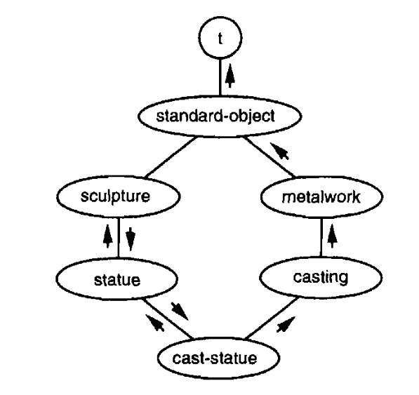
Figure 4: Class hierarchy
To build such a network for a class, start at the bottom with a node representing that class. Draw links upward to nodes representing each of its immediate superclasses, laid out from left to right as they appeared in the calls to defclass. Repeat the process for each of those nodes,and soon,until you reach classes whose only immediate superclass is standard-object - that is, classes for which the second argument to defclass was (). Create links from those classes up to a node representing standard-object, and one from that node up to another node representing the class t . The result will be a network that comes to a point at both top and bottom, as in Figure 4.
The precedence list for a class can be computed by traversing the corresponding networks as follows:
- Start at the bottom of the network.
- Walk upward, always taking the leftmost unexplored branch.
- If you are about to enter a node and you notice another path entering the same node from the right, then instead of entering the node, retrace your steps until you get to a node with an unexplored path leading upward. Go back to step 2.
- When you get to the node representing
t, you're done. The order in which you first entered each node determines its place in the precedence list.
One of the consequences of this definition (in fact, of rule 3) is that no class appears in the precedence list before one of its subclasses.
The arrows in Figure 4 show how it would be traversed. The precedence list determined by this graph is: cast-statue, statue, sculpture, casting, metalwork, standard-object, t. Sometimes the word specific is used as shorthand to refer to the position of a class in a given precedence list. The preceding list runs from most specific to least specific.
The main point of precedence is to decide what method gets used when a generic function is invoked. The other time precedence matters is when a slot with a given name is inherited from several superclasses.
12.6. DONE Generic Functions
A generic function is a function made up of one or more methods. Methods are defined with defmethod, which is similar in form to defun:
(defmethod combine (x y) (list x y))
Now combine has one method. If we call combine at this point, we will get the two arguments in alist:
CL-USER> (combine 'a 'b) (A B)
So far we haven't done anything we could not have done with a normal function. The unusual thing about a generic function is that we can continue to add new methods for it.
First, we define some classes for the new methods to refer to:
(defclass stuff ()
((name :accessor name
:initarg :name)))
(defclass ice-cream (stuff) ())
(defclass topping (stuff) ())
Now here is a second method for combine:
(defmethod combine ((ic ice-cream) (top topping))
(format nil "~A ice-cream with ~A topping."
(name ic)
(name top)))
In this call to defmethod the parameters are specialized: each one appears in a list with the name of a class. The specialization of a method indicate the kinds of arguments to which it applies. The method just defined will only be used if the arguments to combine are instances of ice-cream and topping respectively.
How does Lisp decide which method to use when a generic function is called? It will use the most specific method for which the classes of the arguments match the specializations of the parameters. Which means that if we call combine with an instance of ice-cream and an instance of topping, we'll get the method we just defined:
CL-USER> (combine (make-instance 'ice-cream :name 'fig)
(make-instance 'topping :name 'treacle))
"FIG ice-cream with TREACLE topping."
But with any other arguments, we'll get the first method we defined:
CL-USER> (combine 123 'cheese) (123 CHEESE)
Because neither of the parameters of the first method is specialized, it will always get last priority, yet will always get called if no other method does. An unspecialized method acts as a safety net, like an otherwise clause in a case expression.
Any combination of the parameters in a method can be specialized. In this method only the first argument is:
(defmethod combine ((ic ice-cream) x)
(format nil "~A ice-cream with ~A."
(name ic)
x))
If we call combine with an instance of ice-cream and an instance of topping, we'll still get the method that's looking for both, because it's more specific:
CL-USER> (combine (make-instance 'ice-cream :name 'grape)
(make-instance 'topping :name 'marshmallow))
"GRAPE ice-cream with MARSHMALLOW topping."
However, if the first argument is ice-cream and the second argument is anything but topping, we'll get the method we just defined above:
CL-USER> (combine (make-instance 'ice-cream :name 'clam)
'reluctance)
"CLAM ice-cream with RELUCTANCE."
When a generic function is called, the arguments determine a set of one or more applicable methods. A method is applicable if the arguments in the call come within the specializations of all its parameters.
If there are no applicable methods we get an error. If there is just one, it is called. If there is more than one, the most specific gets called. The most specific applicable method is determined based on the class precedence for the arguments in the call. The arguments are examined left to right. If the first parameter of one of the applicable methods is specialized on a more specific class than the first parameters of the other methods, then it is the most specific method. Ties are broken by looking at the second argument, and so on. We can't go through all the arguments and still have a tie, because then we would have two methods with exactly the same specializations. That's impossible because the definition of the second would overwrite the first.
Methods don't have to be specialized on classes defined by defclass. They can also be specialized on types (or more precisely, the classes that mirror types). Here is a method for combine that's specialized on numbers:
(defmethod combine ((x number) (y number)) (+ x y))
Methods can even be specialized on individual objects, as determined by eql:
(defmethod combine ((x (eql 'powder)) (y (eql 'spark))) 'boom)
Specializations on individual objects take precedence over class specializations.
Methods can have parameter lists as complex as ordinary Common Lisp functions, but the parameter lists of all the methods that compose a generic function must be congruent. They must have the same number of required parameters, the same number of optional parameters (if any), and must either all use &rest or &key, or all not use them. The following pairs of parameter lists are all congruent,
(x) (a) (x &optional y) (a &optional b) (x y &rest z) (a b &key c) (x y &key z) (a b &key c d)
and the following pairs are not:
(x) (a b) (x &optional y) (a &optional b c) (x &optional y) (a &rest b) (x &key x y) (a)
Only required parameters can be specialized. Thus each method is uniquely identified by its name and the specializations of its required parameters. If we define another method with the same qualifiers and specializations, it overwrites the original one. So by saying
(defmethod combine ((x (eql 'powder)) (y (eql 'spark))) 'kaboom)
we redefine what combine does when its arguments are powder and spark.
12.7. DONE Auxiliary Methods
Methods can be augmented by auxiliary methods, including before-, after-, and around-methods. Before-methods allow us to say, "But first, do this." They are called, most specific first, as a prelude to the rest of the method call. After-methods allow us to say, "P.S. Do this too." They are called, most specific last, as an epilogue to the method call. Between them, we run what has till now been considered just the method, but is more precisely known as the primary method. The value of this call is the one returned, even if after-methods are called later.
Before- and after-methods allow us to wrap new behavior around the call to the primary method. Around-methods provide a more drastic way of doing the same thing. If an around-method exists, it will be called instead of the primary method. Then, at its own discretion, the around-method may itself invoke the primary method (via the function call-next-method, which is provided just for this purpose).
This is called standard method combination. In standard method combination, calling a generic function invokes
- The most specific around-method, if there is one.
- Otherwise, in order,
a) All before-methods, from most specific to least specific.
b) The most specific primary method.
c) All after-methods, from least specific to most specific.
The value returned is the value of the around-method (in case 1) or the value of the most specific primary method (in case 2).
Auxiliary methods are defined by putting a quilifiying keyword after the method name in the call to defmethod. If we define a primary speak method for the speaker class as:
(defclass speaker () ()) (defmethod speak ((s speaker) string) (format t "~A" string))
then calling speak with an instance of speaker just prints the second argument:
CL-USER> (speak (make-instance 'speaker) "I'm hungry") I'm hungry NIL
By defining a subclass intellectual, which wraps before- and after-methos around the primary speak method:
(defclass intellectual (speaker) ()) (defmethod speak :before ((i intellectual) string) (princ "Perhaps ")) (defmethod speak :after ((i intellectual) string) (princ " in some sense."))
we can create a subclass of speakers that always have the last and the first word:
CL-USER> (speak (make-instance 'intellectual)
"I'm hungry")
Perhaps I'm hungry in some sense.
NIL
As the preceding outline of standard method combination noted, all before- and after-methods get called. So if we define before- or after-methods for the speaker superclass:
(defmethod speak :before ((s speaker) string) (princ "I think "))
they will get called in the middle of the sandwich:
CL-USER> (speak (make-instance 'intellectual)
"I'm hungry")
Perhaps I think I'm hungry in some sense.
NIL
Regardless of what before- or after-methods get called, the value returned by the generic function is the value of the most specific primary method — in this case, the nil returned by format.
This changes if there are around-methods. If there is an around-method specialized for the arguments passed to the generic function, the around-method will get called first, and the rest of the methods will only run if the around-method decides to let them. An around- or primary method can invoke the next method by calling call-next-method. Before doing so, it can use next-method-p to test whether there is a next method to call.
With around-methods we can define another, more cautious, subclass of speaker:
(defclass courtier (speaker) ())
(defmethod speak :around ((c courtier) string)
(format t "Does the King believe that ~A? " string)
(if (eql (read) 'yes)
(if (next-method-p) (call-next-method))
(format t "Indeed, it is a preposterous idea.~%"))
'bow)
When the first argument to speak is an instance of the courtier class, the courtier's tongue is now guarded by the around-method:
CL-USER> (speak (make-instance 'courtier) "kings will last") Does the King believe that kings will last? yes I think kings will last BOW CL-USER> (speak (make-instance 'courtier) "the world is round") Does the King believe that the world is round? no Indeed, it is a preposterous idea. BOW
Unlike before- and after-methods, the value returned by the around- method is returned as the value of the generic function.
12.8. DONE Method Combination
In standard method combination the only primary method that gets called is the most specific (though it can call others vis call-next-method). Instead we might like to be ale to combine the results of all applicable primary methods.
It's possible to define methods the are combined in other ways - for example, for a generic function to return the sum of all the applicable primary methods. Operator method combination can be understood as if it resulted in the evaluation of a Lisp expression whose first element was some operators, and whose arguments were called to the applicable primary methods, in order of specificity. If we defined the price generic function to combine values with +, and there were no applicable around-methods, it would behave as though it were defined:
(defun price (&rest args)
(+ (apply (most-specific-primary-method) args)
...
(apply (least-specific-primary-method) args)))
If there are applicable around-methods, they take precedence, just as in standard method combination. Under operator method combination, an around-method can still call the next method via call-next-method. However, primary methods can no longer use call-next-method.
We can specify the type of method combination to be used by a generic function with a :method-combination clause in a call to defgeneric:
(defgeneric price (x) (:method-combination +))
Now the price method will use + method combination; any defmethod for price must have + as the second argument. If we defind some classes with prices:
(defclass jacket () ()) (defclass trousers () ()) (defclass suit (jacket trousers) ()) (defmethod price + ((jk jacket)) 350) (defmethod price + ((tr trousers)) 200)
then when we ask for the price of an instance of suit, we get the sum of the applicable price methods:
CL-USER> (price (make-instance 'suit)) 550
The following symbols can be used as the second argument to defmethod or in the :method-combination option to defgeneric:
+ and append list max min nconc or progn
You can also use standard, which yields standard method combination.
Once you specify the method combination a generic function should use, all methods for that function must use the same kind. Now it would cause an error if we tried to use another operator (or :before or :after) as the second argument in a defmethod for price.
invalid method error for
#1=#<STANDARD-METHOD COMMON-LISP-USER::PRICE :BEFORE (SUIT) {1004CD7633}>
method:
The method #1# on
#<STANDARD-GENERIC-FUNCTION COMMON-LISP-USER::PRICE (3)>
has an invalid qualifier.
The method combination type + was defined with the short form
of DEFINE-METHOD-COMBINATION and so requires all methods have
either the single qualifier + or the single qualifier :AROUND.
[Condition of type SIMPLE-ERROR]
If we want to change the method combination of price, we must remove the whole generic function by calling fmakunboud.
12.9. DONE Encapsulation
object-oriented languages often provide some way of distinguishing between the actual representation of objects and the interface they present to the world. Hiding implementation details brings two advantages: you can change the implementation without affecting the object's outward appearance, and you prevent objects from being modified in potentially dangerous ways. Hidden details are sometimes said to be encapsulated.
Although encapsulation is often associated with object-oriented programming, the two ideas are really seprate. You can have either one without the other. For example:
(let ((counter 0))
(defun our-reset ()
(setf counter 0))
(defun our-stamp ()
(setf counter (+ counter 1))))
CL-USER> (list (our-stamp) (our-stamp) (our-reset) (our-stamp)) (1 2 0 1)
The function our-stamp and our-reset work by sharing a counter, but calling code does not need to know about this counter, nor can it modify it directly.
In Common Lisp, packages are the standard way to distinguish between public and private information. To restrict access to something, we put it in a separate package, and only export the names that are part of the external interface.
We can encapsulate a slot by exporting the name of the methods that can modify it, but not the name of the slot itself. For example, we could define a counter class and associated increment and clear methods as follows:
(defpackage "CTR" (:use "COMMON-LISP") (:export "COUNTER" "INCREMENT" "CLEAR")) (in-package ctr) (defclass counter () ((state :initform 0))) (defmethod increment ((c counter)) (incf (slot-value c 'state))) (defmethod clear ((c counter)) (setf (slot-value c 'state) 0))
Under this definition, code outside the package would be able to make instances of counter and call increment and clear, but would not have legitimate access to the name state.
CL-USER> (import 'ctr)
T
CL-USER> (setf c (make-instance 'ctr:counter))
#<CTR:COUNTER {1002753AD3}>
CL-USER> (slot-value c 'state)
; Evaluation aborted on #<SIMPLE-ERROR "~@<When attempting to ~A,
; the slot ~S is missing from the object ~S.~@[~a~]~@:>" {1002754993}>.
If you want to do more than just distinguish between the internal and external interface to a class, and actually make it impossible to reach the value stored in a slot, you can do that too. Simply unintern its name after you've defined the code that needs to refer to it:
(unintern 'state)
Then there is no way, legitimate or otherwise, to refer to the slot from any package.
13. DONE Structure
Section 4.3 explained how Lisp's use of pointers allows us to put any value anywhere. This statement is full of possibilities, not all of them good. For example, an object can be an element of itself. Whether this is good or bad depends on whether it's done on purpose or by accident.
13.1. DONE Shared Structure
Lists can share conses in common. In the simplest case, one list might be part of another.
CL-USER> (setf part (list 'b 'c)) (B C) CL-USER> (setf whole (cons 'a part)) (A B C)
The first cons is part of (in face, is the cdr of) the second. In situations like this, we say that the two lists share structure**. The underlying structure of the two lists is represented in Figure 5.
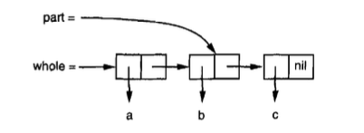
Figure 5: Shared structure
The predicate tailp detects this situation. It takes two lists and returns true if the first would be encountered on traversing the second:
CL-USER> (tailp part whole) T
We could imagine it written as:
(defune our-tailp (x y)
(or (eql x y)
(and (consp y)
(our-tailp x (cdr y)))))
As the definition suggests, every list is a stail of itself, and nil is a tail of every proper list.
In the more complex case, two lists can share structure without either one being a tail of the other. This happens when they share a tail in common, as in Figure 6. We can create this situation as follows:
(setf part (list 'b 'c)
whole1 (cons 1 part)
whole2 (cons 2 part))
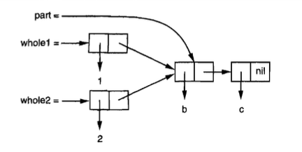
Figure 6: A shared tail
Now whole1 and whole2 share structure without either list being part of the other.
When we have nested lists, it's important to distinguish between the lists sharing structure, and their elements sharing structure. Top-level list structure refers to the conses that make up a list, not including any conses that make up its elements. Figure 7 shows the top-level list structure of a nested list.
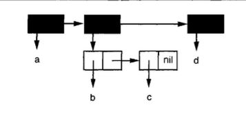
Figure 7: Top-level list structure
Whether two conses share structure depends on whether we are considering them as lists or as trees. Two nested lists may share structure as trees, without sharing structure as lists. The following code creates the situation shown in Figure 8, in which two lists contain the same list as an element:
(setf element (list 'a 'b)
holds1 (list 1 element 2)
holds2 (list element 3))
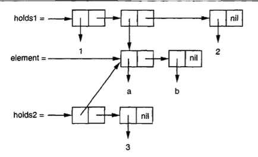
Figure 8: Shared subtree
Although the second element of holds1 shares structure with (in fact, is identical) to the first element of holds2, holds1 and holds2 do not share structure as lists. Two lists only share structure as lists if they share top-level list structure, which holds1 and holds2 do not.
If we want to avoid sharing structure, we can do it by copying. The function copy-list, which could be defined as
(defun our-copy-list (lst)
(if (null lst)
nil
(cons (car lst) (our-copy-list (cdr lst)))))
will return a list that doesn't share top-level list structure with the original list.
The function copy-tree, which might be defined as
(defun our-copy-tree (tr)
(if (atom tr)
tr
(cons (our-copy-tree (car tr))
(our-copy-tree (cdr tr)))))
will return a list that doesn't even share tree structure with original list. Figure shows the different between calling copy-list and copy-tree on a nested list.
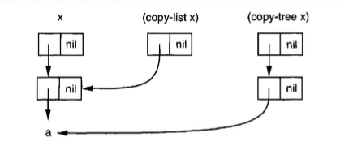
13.2. DONE Modification
Why would we want to avoid sharing structure? Up to this point, the issue of shared structure has been just an intellectual exercise. It would not have made any difference to any program we've written so far. It is when we modify objects that shared structure becomes an issue. If two lists share structure, and we modify one, then we may inadvertently be modifying the other.
CL-USER> (setf whole (list 'a 'b 'c)
tail (cdr whole))
(B C)
CL-USER> (setf (second tail) 'e)
E
CL-USER> tail
(B E)
CL-USER> whole
(A B E)
It's not always an error to modify two things at once. Sometimes it might be what you want. But when it happens inadvertently, modifying shared structure can cause some very subtle bugs. Lisp programmers learn to be aware of shared structure, and to suspect it immediately in certain kinds of errors. When a list mysteriously changes for no apparent reason, it is probably because you changed something else that shared structure with it.
It is not the shared structure that's dangerous, but the changing. To be on the safe side, simply avoid using setf (or related operators like pop, rplaca, etc.) on list structure, and you won't run into any problems. If some application absolutely requires you to modify list structure, find out where the lists come from to make sure that they don't share structure with anything that shouldn't be changed. If they do, or if you can't predict where the lists will come from, make the changes to a copy.
You have to be doubly careful when you are calling a function written by someone else. Until you know otherwise, consider the possibility that anything you pass to the function
- could have destructive operations done to it, and/or
- could be saved somewhere, so that if you later modified the object, you would also be modifying part of something that the other code was maintaining for its own use.
In both cases, the solution is to pass a copy.
In Common Lisp, a function called in the course of travering list structrue (e.g. an argument to mapcar or remove-if) is not allowed to modify the structure being traversed. The consequence of evaluating such code are undefined.
13.3. DONE Destructive Functions
Common Lisp includes several function that are allowed to modify list structure. This functions are destructive for reason of efficiency. Though they may recycle conses passed to them as arguments, they are not meant to be called for their side-effects.
For example, delete is a destructive version of remove. While it is allowed to trash the list passed to it as an argument, it doesn't promise to do anything. This is what happens in most implementations:
CL-USER> (setf lst '(a r a b i a)) (A R A B I A) CL-USER> (delete 'a lst) (R B I) CL-USER> lst (A R B I)
As with remove, if you want side-effects, you should use setf with the return value:
(setf lst (delete 'a lst))
As an example of how destructive functions recycle the lists passed to them, consider nconc (The n originally stood for "non-consing." Several destructive functions have names beginning with n.), the destructive version of append. This two-argument version shows clearly how two existing lists are sewn together:
(defun nconc2 (x y)
(if (consp x)
(progn
(setf (cdr (last x)) y)
x)
y))
We go the last cons cell in the first list, and set its cdr to point to the second list.
CL-USER> (setf lst1 '(a b c)) (A B C) CL-USER> (setf lst2 '(1 2 3)) (1 2 3) CL-USER> (append lst1 lst2) (A B C 1 2 3) CL-USER> lst1 (A B C) CL-USER> lst2 (1 2 3) CL-USER> (nconc lst1 lst2) (A B C 1 2 3) CL-USER> lst1 (A B C 1 2 3) CL-USER> lst2 (1 2 3)
The function mapcan is like mapcar, but splices together the values returned by the function (which must be lists) using nconc:
CL-USER> (setf lst1 '(a b c)) (A B C) CL-USER> (setf lst2 '(1 2 3 4)) (1 2 3 4) CL-USER> (mapcar #'list lst1 lst2) ((A 1) (B 2) (C 3)) CL-USER> lst1 (A B C) CL-USER> lst2 (1 2 3 4) CL-USER> (mapcan #'list lst1 lst2) (A 1 B 2 C 3) CL-USER> lst1 (A B C) CL-USER> lst2 (1 2 3 4)
This function might be defined as follows:
(defun our-mapcan (fn &rest lsts) (apply #'nconc (apply #'mapcar fn lsts)))
Use mapcan with caution, because it is destructive. It splices together the returned lists with nconc, so they had better not be needed elsewhere.
This kind of function is particularly useful in problems that can be understood as collecting all the nodes at one level of some tree. For example, if children returns a list of someone's children, then we could define a function to return a list of someone's grandchildren as follows:
(defun grandchildren (x)
(mapcan #'(lambda (c)
(copy-list (children c)))
(children x)))
This function calls copy-list on the assumption that children returns a list that's stored somewhere, instead of making a fresh one.
A nondestructive variant of mapcan might be defined:
(defun mappend (fn &rest lsts) (apply #'append (apply #'mapcar fn lsts)))
If we used mappend, we could leave out the copy-list in the definition of grandchildren:
(defun grandchildren (x) (mappend #'children (children x)))
13.4. DONE Circular Structure
There are two kinds of circular lists. The most useful are those whose top-level list structure is a loop. Such lists are called *cdr-circular because the loop passes through the cdr part of a cons.
To make a cdr-circular list with one element, you set the cdr of a list to be the list itself:
CL-USER> (setf x '(a)) (A) CL-USER> (progn (setf (cdr x) x) nil) NIL
If Lisp tries to print the list we just create, it would usually display (a a a , ad infininum) (or stucked). But if we set the global *print-circle* to t, objects will be displayed in a way that can represent circular structure:
CL-USER> (setf *print-circle* t) T CL-USER> x #1=(A . #1#)
If you need to, you can use the #n= and #n# read-macro to represent shared structure youself.
cdr-circular lists could be useful - to represent buffers or pools, for example. The following function would take any non-cdr-circular, nonempty list and convert it into cdr-circular list with the same elements:
(defun circular (lst) (setf (cdr (last lst)) lst))
The other kind of circular lists are *car-circular lists. A car-circular list is a tree that has itself as a subtree. They are so called because the loop passes through the car of some cons. Here we create a car-circular list whose second element is itself:
CL-USER> (let ((y (list 'a)))
(setf (car y) y)
y)
#1=(#1#)
Figure 9 shows the resulting structure. Though car-circular, this list is a proper list. Cdr-circular lists are never proper lists, but car-circular lists can be, unless they are disqualified for some other reason.
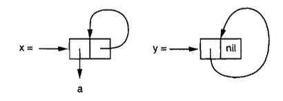
Figure 9: Circular lists
A list could be both car-circular and cdr-circular. The car and the cdr of this cons will be the cons itself:
CL-USER> (let ((c (cons 1 1)))
(setf (car c) c
(cdr c) c)
c)
#1=(#1# . #1#)
It's hard to imagine what the use of such an object would be. Indeed, the main reason to know about circular lists may be to avoid creating them by accident, because most functions that traverse list structure will go into an infinite loop if they are given a list that's circular in the dimension they traverse.
Circular structure can be an issue for other kinds of objects besides lists. For example, an array can contain itself as an element:
CL-USER> (setf *print-array* t)
T
CL-USER> (let ((a (make-array 1)))
(setf (aref a 0) a)
a)
#1=#(#1#)
Indeed, just about anything that can have elements can have itself as an element.
It's quite common to have circularities involving structures created by defstruct. For example, a structure c representing an element in a tree might have a parent field that contained another structure p whose child field in turn contained c:
CL-USER> (progn
(setf *print-circle* t)
(defstruct my-elt
(parent nil)
(child nil))
(let ((c (make-my-elt))
(p (make-my-elt)))
(setf (my-elt-parent c) p
(my-elt-child p) c)
c))
#1=#S(MY-ELT :PARENT #S(MY-ELT :PARENT NIL :CHILD #1#) :CHILD NIL)
14. DONE Speed
Lisp is really two languages: a language for writting fast programs and a language for writting programs fast. In the early stages of a program you can trade speed for convenience. Then once the structure of your program begins to crystallize, you can refine critical portions to make them faster.
It's difficult to give general advice about optimization, because of the variation between Common Lisp implementations. A change that made your program faster in one implementation might make it slower in another. This is something that comes with the territory. The more powerful the language, the further you are from the machine, and the further you are from the machine, the greater the chance that different implementations will take different paths toward it. So while there are some techniques that are almost certain to make your programs faster, the aim of this chapter will be to suggest rather than to prescribe.
14.1. DONE The Bottleneck Rule
Three points can be made about optimization, regardless of the implementation:
- It should be focused on bottlenecks.
- It should not begin too early.
- It should begin with algorithms.
Probably the most important thing to understand about optimization is that programs tend to have a few bottlenecks that account for a great part of the execution time. According to Knuth, "most of the running time in non-IO-bound programs is concentrated in about 3% of the source text." Optimizing these parts of the program will make it run noticeably faster; optimizing the rest of the program will be a waste of time in comparison.
So the crucial first step in optimizing any program is to find the bottlenecks. Many Lisp implementations come with profilers that can watch a program as it's running and report the amount of time spent in each part. A profiler is a valuable tool — perhaps even a necessity — in producing the most efficient code.
A corollary of the bottleneck rule is that one should not put too much effort into optimization early in a program's life. Knuth puts the point even more strongly: "Premature optimization is the root of all evil (or at least most of it) in programming." It's hard to see where the real bottlenecks will be when you've just started writing a program, so there's more chance you'll be wasting your time. Optimizations also tend to make a program harder to change.
You end up with better programs if each task can be emphasized at the appropriate time. One of the benefits of Lisp is that it lets you work at a range of different speeds: you can write slow code fast or fast code slow. In the early stages of a program you tend to work in the former mode, then as optimization takes precedence you switch into the latter. As the bottleneck rule suggests, this is a more effective use of your time. In a very low-level language, like assembler, you are essentially optimizing every line of the program. Most of this effort is wasted, because the bottlenecks only make up a small part of it. A more abstract language allows you to spend a greater proportion of your time on the bottlenecks, and so get most of the gains with a fraction of the effort.
When you do turn to optimization, begin at the top. That is, make sure that you're using the most efficient algorithm before you resort to low-level coding tricks. The potential gains are greater — perhaps great enough that you won't have to resort to coding tricks after all. This rule has to be balanced against the preceding one, though. Sometimes decisions about algorithms have to be made early.
14.2. DONE Compilation
Five parameters control the way your code is compiled:
- speed
- refers to the speed of the code produced by the compiler;
- compilation-speed
- refers to the speed at which your program will be compiled;
- safety
- refers to the amount of error-checking done in the object code;
- space
- refers to the size and memory needs of the object code;
- debug
- refers to the amount of information retained for debugging.
The compilation parameters are not real variables. They are assigned weights from 0 (unimportant) to 3 (most important) in declarations. If a major bottleneck occurred in the inner loop of some function, we might add a declaration like the following:
(defun bottleneck (...)
(do (...)
(...)
(do (...)
(...)
(declare (optimize (speed 3) (safety 0)))
...)))
Generally you would not want to add such declarations until the code was finished and tested.
To ask globally for the fastest possible code, regardless of the consequences, you could say:
(declaim (optimize (speed 3)
(compilation-speed 0)
(safety 0)
(debug 0)))
This would be a drastic step, and probably not even necessary, given the bottleneck rule.
One particularly important kind of optimization done by Lisp compilers is the optimization of tail calls. Giving speed the maximum weight will ensure tail call optimization by any compiler capable of it.
A call is a tail call if nothing remians to be done after it returns. The following function returns the length of a list:
(defun length/r (lst)
(if (null lst)
0
(1+ (length/r (cdr lst)))))
The recursive call is not a tail call, because after it returns, its value has to be passed to 1+. However, this version is tail-recursive,
(defun length/tr (lst)
(labels ((len (lst acc)
(if (null lst)
acc
(len (cdr lst) (1+ acccc)))))
(len lst 0)))
or more precisely, the local function len is, because nothing more has to happen after the recursive call returns. Instead of building its return value on the way back up the recursion, like length/r, it accumulates the return value in the additional parameter acc on the way down.
A good compiler can compile a tail call into a goto, and so can compile a tail-recursive function into a loop. In typical machine language code, when control arrives for the first time at the segment of instructions representing len, there is information on the stack saying what to do upon returning. Because nothing remains to be done after the recursive call, this information remains valid for the second invocation as well: what we are supposed to do on returning from the second invocation is simply to return from the first invocation. So after setting the parameters to their new values, we can just jump back to the beginning of the function and act as if this were the second invocation. There is no need to do a real function call.
Another way to have the abstraction of function calls without the cost is to have functions compiled inline. This is valuable mainly for small functions, where the machinery of calling the function could entail more work than the function itself performs. For example, the following function tells whether something is a list of a single element:
(declaim (inline single?))
(defun single? (lst)
(and (consp lsp)
(null (cdr lst))))
Because this function is globally decalred inline, a reference to single? within a compiled function should no longer require a real function call. If we define a function that calls it,
(defun foo (x) (single? (bar x)))
then when fool is compiled, the code for single? should be compiled right into it, just as if we had written
(defun foo (x)
(let ((lst (bar x)))
(and (consp lst)
(null (cdr lst)))))
in the first place.
There are two limitations on inline compilation. Recursive functions can't be inlined. And if an inlined function is redefined, we have to recompile any function that calls it, or the calling function will still reflect the old definition.
Different Lisp compilers do varying amounts of optimiztion. If you want to see the code your compiler produce for a function, try calling disassemble. This function takes a function or function name and displays its compiled form.
CL-USER> (defun foo (x)
x)
FOO
CL-USER> (disassemble 'foo)
; disassembly for FOO
; Size: 16 bytes. Origin: #x2277EF0D ; FOO
; 0D: 498B4510 MOV RAX, [R13+16] ; thread.binding-stack-pointer
; 11: 488945F8 MOV [RBP-8], RAX
; 15: 488BE5 MOV RSP, RBP
; 18: F8 CLC
; 19: 5D POP RBP
; 1A: C3 RET
; 1B: CC10 INT3 16 ; Invalid argument count trap
NIL
Even if what you see is completely incomprehensible, you can still use disassemble to determine whether declarations are being used: compile two version of the function, one with the declaration and one without, and see if the code displayed by disassemble differs between the two. You can use a similar technique to see if functions are being compiled inline. In either case, be sure to set the compilation parameters beforehand to get the fatest code.
14.3. DONE Type Declarations
In most languages, you have to declare the type of each variable, and the variable can only hold values of that type. Such a language is said to be strong typed. As well as being a lot of work for the programmer, this approach imposes restrictions on what you can do. In such a language it's hard to write functions that work for different kinds of arguments, or to have data structure that contain different kinds of elements. The advantage of this approach is that whenever the compiler sees an addition, for example, it knows beforehand what kind of addition is involved. If both arguments are integers, it can hard-wire an integer addition in the object code.
Common Lisp uses a more flexible approach called manifest typing (There are two ways to describe Lisp's approach to typing: by where the type information is kept, and by when it is used. Manifest typing means that the type information is attached to the data objects, and run-time typing means that type information is used at run-time. In practice they mean the same thing.). Values have types, not variables. Variables can hold objects of any type.
If we left it at that, we would have to pay for this flexibility in speed. Because it can take several different types of numbers, + would have to look at the types of each of its arguments, and decide what kind of addition to do at run-time.
If we just want an integer addition after all, this is an inefficient way to get it. So Common Lisp's approach is: tell me as much as you know. If we know ahead of time that both of the arguments in some addition will be fixnums, then we can declare them to be such, and the compiler will hard-wire an integer addition just as in C.
So the difference between the two approaches to typing need not entail any difference in speed. It's just that strong typed approach makes type declarations mandatory, and manifest typing doesn't. In Common Lisp, type declarations are completely optional. They may make a program faster, but (unless incorrect) they will not change its behavior.
Global declarations are made with declaim, which should be followed by one or more declaration forms. A type declaration is a list containing the symbol type, followed by a type name and the name of one or more variables. So to declare the type of a global variable, one could say:
(declaim (type fixnum *count*))
In ANSI Common Lisp you can omit the type and say simply:
(declaim (fixnum *count*))
Local declarations are made with declare, which takes the same arguments as declaim. Declarations can begin any body of code where variables have just been created: in defun, let, do, and so on. To declare a functions's parameters to be fixnum, we would say:
(defun ploy (a b x) (declare (fixnum a b c)) (+ (* a (expt x 2)) (* b x)))
A variable name in a type declaration refers to the variable with that name in the context where the declaration occurs.
You can also declare that the value of ean expression will be of a certain type, by using the. If we know beforehand that a, b and x will not only be fixnums, but that they will be small enough fixnums that all the intermediate results will be fixnums, we can say:
(defun ploy (a b x)
(declare (fixnum a b x))
(the fixnum (+ (the fixnum (* a (the fixnum (expt x 2))))
(the fixnum (* b x)))))
This looks awkward. Fortunately, there are two reasons that you rarely have to clutter up your numeric code with the in this way. One is that it's easy to use macros to insert such declarations for you. The other is that some implementations use special tricks to make fixnum arithmetic fast without declarations.
There are a great many types in Common Lisp — a potentially unlimited number, considering that you can define new types yourself. However, declarations only matter for a few. When does it pay to make type declarations? There are two general rules:
- It pays to declare the types of arguments to functions that work for arguments of several different types (but not all types). If you knew that the arguments in a call to + would always be fixnums, or that the first argument in a call to
arefwould always be a particular kind of array, it could pay to make a type declaration. - It is usually only worthwhile to make declarations for types near the bottom of the type hierarchy: declaring something to be of type
fixnumorsimple-arraymight be useful, but declaring something to be of typeintegerorsequenceprobably would not.
Type declarations are particularly important for the contents of complex objects, including arrays, structures, and instances. Such declarations can improve efficiency in two ways: as well as allowing the compiler to determine the types of arguments to functions, they make it possible to represent these objects more efficiently in memory.
If nothing is known about the type of elements an array will contain, it has to be represented in memory as a block of pointers. But if it is known that the array will only contain, say, double-floats, then the array can be represented as a block of actual double-floats. This way the array will take less space, because we no longer need a pointer to point to each of the double-floats, and access will be faster, because we don't have to follow pointers to read and write elements.
You can specify the kind of values that an array will contain by giving the :element-type argument to make-array. Such an an array is called a specialized array. Figure 10 shows what would happen, in most implementations, as a result of evaluating the following code:
(setf x (vector 1.234d0 2.345d0 3.456d0)
y (make-array 3 :element-type 'double-float)
(aref y 0) 1.234d0
(aref y 1) 2.345d0
(aref y 2) 3.456d0)
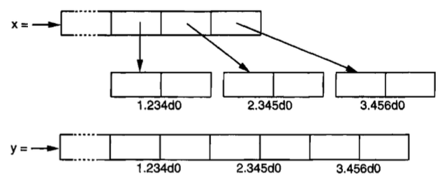
Figure 10: Effect of specifying element type
Each rectangle in Figure 10 represents a word of memory. The two arrays each consist of a header of unspecified length, followed by some representation of the tree elements. In x, each element is represented by a pointer. All three pointers happen to point to double-floats at the moment, but we could store objects of any type in this vector. In y, each element is an actual double-float. This is fater and takes less space, but it means that the vector can only hold double-floats. Note that we use aref to refer to the elements of y. A specialized vector is no longer a simple vector, so we can no longer use svref to refer to its elements.
As well as specifying the element type of an array when you create it, you should declare the dimensions and element type of an array in code that uses it. A full vector declaration would look like:
(declare (type (vector fixnum 20) v))
This declare v to be a vector of length 20, specialized for fixnums.
The most general form of array declaration consists of the array type followed by the element type and a list of dimensions:
(declare (type (simple-array fixnum (4 4)) arr))
This declare that arr will be \(4\times 4\) simple array specialized for fixnums.
The following code shows how to create a \(1000 \times 1000\) array of single-floats, and how to write a function to sum the elements of such an array. Arrays are
stored in row-major order and should be traversed that way when possible.
(setf a (make-array '(1000 1000)
:element-type 'single-float
:initial-element 1.0s0))
(defun sum-elts (a)
(declare (type (simple-array single-float (1000 1000)) a))
(let ((sum 0.0s0))
(declare (type single-float sum))
(dotimes (r 1000)
(dotimes (c 1000)
(incf sum (aref a r c))))
sum))
We use time to compare the performance of sum-elts with and without declarations. The time macro displays some (implementation-dependent) measure of how long it takes to evaluate an expression. It's only meaningful to time compiled functions.
CL-USER> (time (sum-elts a)) Evaluation took: 0.001 seconds of real time 0.001061 seconds of total run time (0.001060 user, 0.000001 system) 100.00% CPU 2,870,804 processor cycles 0 bytes consed 1000000.0
If we take the type declarations out of sum-elts and recompile it, the same computation takes more time:
CL-USER> (time (sum-elts a)) Evaluation took: 0.008 seconds of real time 0.008579 seconds of total run time (0.008564 user, 0.000015 system) 112.50% CPU 23,358,101 processor cycles 0 bytes consed 1000000.0
The importance of type declarations, especially for arrays and numbers, cannot be overemphasized.
14.4. DONE Garbage Avoidance
As Lisp allows you to delay thinking about the types of variables, it also allows you to delay thinking about memory allocation. In the early stages of a program it frees your imagination not to have to think about (or deal with bugs involving) memory allocation. As a program matures, it can rely less on dynamic allocation and so become faster.
However, consing less does not always make a program faster. In Lisp implementations with bad garbage collectors, programs that cons a lot tend to run slowly. Until recently, most Lisp implementations have had bad garbage collectors, and so it has become a tradition that efficient programs should cons as little as possible. Recent developments have turned this conventional wisdom on its head. Some implementations now have such sophisticated garbage collectors that it is faster to cons up new objects and throw them away than it is to recycle them.
This section introduces some ways to make programs cons less. Whether consing less will make your programs run faster depends on the implementation. Again, the best advice is to try it and see.
There are a lot of things you can do to reduce consing. Some of them won't affect the shape of your program at all. For example, one of the easiest steps you can take is to use destructive functions. The following table lists some commonly used functions and their destructive counterparts.
| SAFE | DESTRUCTIVE |
|---|---|
| append | nconc |
| reverse | nreverse |
| remove | delete |
| remove-if | delete-if |
| remove-duplicates | delete-duplicates |
| subst | nsubst |
| subst-if | nsubst-if |
| union | nunion |
| intersection | nintersection |
| set-difference | nset-difference |
When you know it's safe to modify a list, you can use delete instead of remove, nreverse instead of reverse, and so on.
If you want to eliminate consing entirely, you don't have to give up the possibility of creating things on the fly. What you have to avoid is allocating space for them on the fly, and reclaiming it by garbage collection. The general solution is to allocate blocks of memory beforehand, and explicitly recycle used blocks yourself. Beforehand could mean at compile-time, or in some initialization routine. When spped begins to matter depends on the application.
For example, when circumstances allow us to impose a limit on the size of a stack, we could have the stack grow and shrink along a pre-allocated vector, instead of building it out of conses. Common Lisp has built-in support for using vectors as stacks. If we give the optional fill-pointer argument to make-array, we will get a vector that seems to be expandable. The first argument to make-array specifies the amount of storage to be allocated for the vector, but the fill-pointer, when given, specifies the initial effective length:
CL-USER> (setf *print-array* t)
T
CL-USER> (setf vec (make-array 10 :fill-pointer 2
:initial-element nil))
#(NIL NIL)
The vector we just made will seem to sequence functions as if it had only two elements,
CL-USER> (length vec) 2
but it will be able to grow until it has up to ten. Because vec has a fill pointer, we can use the functions vector-push and vector-pop to push and pop elements as if it where a list:
CL-USER> (vector-push 'a vec) 2 CL-USER> vec #(NIL NIL A) CL-USER> (vector-pop vec) A CL-USER> vec #(NIL NIL)
When we called vector-push, it incremented the fill pointer and returned its old value. As long as the fill pointer is less than the initial argument to make-array, we can push new elements onto the vector; when it runs out of space, vector-push will return nil. We could push up to eight more elements onto vec at this point.
One disadvantage of vectors with fill pointers is that they are no longer simple vectors. We have to use aref instead of svref to refer to elements. This cost has to be balanced against the potential gains.
In applications that involve very long sequences, you may want to use map-into instead of map. Instead of a sequence type, map-into takes as its first argument an actual sequence to hold the result. This sequence can be one of those from which the arguments to the function are taken. So, for example, if you want to increment each element of a vector v, you might write:
(setf v (map-into v #'1+ v))
Another way to avoid garbage collection is to encourage the compiler to allocate objects on the stack instead of the heap. When you know that you will only need something temporarily, you may be able to avoid allocating space for it on the heap by declaring it to have dynamic extent.
By giving a dynamic extent declaration for a variable, you're saying that the variable's value need not last any longer than the variable does. When could the value last longer than the variable? Here's an example:
(defun our-reverse (lst)
(let ((rev nil))
(dolist (x lst)
(push x rev))
rev))
In our-reverse, the list passed as an argument will be accumulated in reverse order in rev. When the function returns, the variable rev will go away. However, the list that is its value will persist: it is sent back to the calling function, where who knows what fate awaits it.
In contrast, consider the following implementation of adjoin:
(defun our-adjoin (obj lst &rest args)
(if (apply #'member obj lst args)
lst
(cons obj lst)))
In this case, we can see from the definition of the function that the list in args is going nowhere. It need not last longer than the variable itself. This is the kind of situation where it would make sense to make a dynamic extent declaration. If we add such a declaration,
(defun our-adjoin (obj lst &rest args)
(declare (dynamic-extent args))
(if (apply #'member obj lst args)
lst
(cons obj lst)))
then the compiler is free (but not required) to allocate space for args on the stack, where it will be automatically discarded on return from our-adjoin.
14.5. DONE Fast Operators
The beginning of this chapter described Lisp as two different languages. In one sense this is literally true. If you look closely at the design of Common Lisp, you can see that some features are intended mainly for speed, and others mainly for convenience.
For example, there are three functions you could use to retrieve the element at a given position in a vector: elt, aref, and svref. Such variety exists to allow you to squeeze as much performance out of a program as possible. So if you can use svref, do. Conversely, a part of a program where speed is important probably should not be calling elt , which works for both arrays and lists.
Instead of calling elt on a list, you can call nth, which is specifically for lists. Yet there is only a single function, length, for finding the length of any sequence. Why doesn't Common Lisp provide a separate version for lists? Because if your program is finding the lengths of lists, it's already lost, as far as speed is concerned. In this case, as in many others, the design of the language suggests what is fast and what isn't.
Another pair of similar functions are eql and eq. The former is the default predicate for testing identity, but the latter is faster if you know that the arguments won't be characters or numbers. Two objects are eq when they have the same location in memory. Numbers and characters may not be associated with any particular memory location, so eq does not apply to them (though in most implementations it does work for fixnums). For arguments of any other kind, eq will return the same value as eql.
It's always fastest to compare objects using eq, because all Lisp has to do is compare the pointers to them. In an eq hash table, gethash can just hash on pointers, without even looking at what they point to. Access is not the only thing to consider, however; eq and eql hash tables incur extra costs under copying garbage collection algorithms because they have to be rehashed after a GC. If this becomes a problem, the best solution may be to use an eql hash table with fixnums as keys.
Calling reduce can be a more efficient alternative to apply when the function in question has a rest parameter. For example, instead of something like
(apply #'+ '(1 2 3))
it can be more efficient to say:
(reduce #'+ ' (1 2 3))
Not only does it help to call the right functions, it helps to call them the right way. Rest, optional, and keyword parameters are expensive. With ordinary parameters, the arguments in a function call are simply left by the caller where the callee knows to look for them. But other kinds of parameters involve processing at run-time. Keyword parameters are the worst. For built-in functions, good compilers take special measures to compile calls with keyword arguments into fast code. But in your own functions it is just as well to avoid using them in speed-critical parts of a program. It is also wise not to push large numbers of arguments into rest parameters, if this can be avoided.
Individual compilers sometimes perform their own particular optimizations. For example, some compilers can optimize case statements where the keys are integers in a narrow range. Check your user's manual for hints about such implementation-specific optimizations.
14.6. DONE Two-Phase Development
In applications where speed is paramount, you may want to rewrite part of a Lisp program in a lower-level language like C or assembler. You can use this technique with programs written in any language — critical parts of C programs are often rewritten in assembler — but the more abstract the language, the greater the benefits of developing programs in two phases.
Common Lisp does not prescribe a way of integrating code written in other languages. This is left up to the implementation, but almost all implementations provide some way to do it.
It may seem wasteful to write a program in one language and then to rewrite part of it in another. In fact, experience has shown this to be a good way to develop software. It can be easier to aim for functionality first, and then for speed, than to try to achieve both at the same time.
If programming were an entirely mechanical process — a matter of simply translating specifications into code — it would be reasonable to do everything in a single step. But programming is never like that. No matter how precise the specifications, programming always involves a certain amount of exploration — usually a lot more than anyone had anticipated.
It might seem that if the specifications were good, programming would simply be a matter of translating them into code. This is a widespread misconception. Programming necessarily involves exploration, because specifications are necessarily vague. If they weren't vague, they wouldn't be specifications.
In other fields, it may be desirable for specifications to be as precise as possible. If you're asking for a piece of metal to be cut to a certain shape, it's probably best to say exactly what you want. But this rule does not extend to software, because programs and specifications are made out of the same thing: text. You can't write specifications that say exactly what you want. If the specifications were that precise, then they would be the program.
In applications that involve a substantial amount of exploration, it can pay to separate implementation into two phases. And the medium you use in the first phase need not be the final one. It can be better to write a program in Lisp, and then rewrite it in C, than to try to write it in C from the start.
15. Advanced Topics
Common Lisp is like an iceberg: a great part of its functionality is invisible to most users, who never need it. You may never need to define packages or read-macros of your own, but when you do, it is helpful to have examples to work from.
15.1. Type Specifiers
Types are not objects in Common Lisp. There is no object that corresponds to the type integer, for example. What we get from a function like type-of, and give as an argument to function like typep, is not a type, but a type specifier.
A type specifier is the name of a type. The simplest type specifiers are symbols like integer. These form a hierarchy in Common Lisp. At the top of the hierarchy is the type t - all objects are of type t. The hierarchy is a tree. There are two paths from nil to the top, for example: one through atom, and the other through list and sequence.
A type is really just a set of objects. Which means that there are as many types as there are sets of objects: an ifinite number. We can denote some of these sets with atomic type specifiers: integer denotes the set of all the integers. But we can also construct compound type specifiers that refer to any set of objects.
For example, if a and b are two type specifiers, the (or a b) denotes the union of the type denoted by a and that denoted by b.That is, an object is of type (or a b) if it is of type a or type b.
CL-USER> (mapcar #'(lambda (x)
(typep x '(or integer string)))
'(1 "hello"))
(T T)
Some of the atomic type specifiers can also appear in compound type specifiers. To denote the set of integers between 1 and 100 inclusive, we could use:
(integer 1 100)
Such a type specifier is said to denote a finite type.
CL-USER> (typep 3 '(integer 1 100)) T
In a compound type specifier, you can leave some information unspecifed by using * in place of an argument. So
(simple-array fixnum (* *))
describes the set of two-dimensional simple arrays specialized for fixnums, and
(simple-array fixnum *)
describes the set (a supertype of the first) of simple arrays specialized for fixnums. Trailing asterisks can be dropped, so in the latter case we could have said:
(simple-array fixnum)
If no argument are given to a compound type specifier, you can use an atom. So simple-array describes the set of all simple arrays.
If there is some compound type specifiers that you'd like to use repreatedly, you can define an abbreviation for it with deftype. This macro is jsut like defmacro, but expands into a type specifier instead of an expression. By saying,
(deftype integer-or-string () `(or integer string))
we define proseq as a new atomic type specifier:
CL-USER> (typep 1 'integer-or-string) T CL-USER> (typep "hello" 'integer-or-string) T
If you define a type specifier to take arguments, the arguments are treated as forms (that is, not evaluated), just as with def macro. So
(deftype multiple-of (n)
(let ((my-predicate (gensym)))
(setf (symbol-function my-predicate)
#'(lambda (x)
(zerop (mod x n))))
`(and integer (satisfies ,my-predicate))))
; (deftype multiple-of (n)
; `(and integer (satisfies (lambda (x)
; (zerop (mod x ,n))))))
defines (multiple-of n) as a specifier for all multiples of n:
CL-USER> (typep 12 '(multiple-of 4)) T CL-USER> (typep 12 '(multiple-of 3)) T CL-USER> (typep 12 '(multiple-of 5)) NIL
Type specifiers are interpreted, and therefore slow, so you would generally be better off defining a function to make this kind of test.
15.2. Binary Streams
A binary stream is a source and/or destination of integers. You create a binary stream by specifying a subtype of integer — most often unsigned-byte — as the :element-type when you open the stream.
There are only two functions for I/O on binary streams, read-byte and write-byte. So here is how you might define a function to copy a file:
(defun copy-file (from to)
(with-open-file (in from :direction :input
:element-type 'unsigned-byte)
(with-open-file (out to :direction :output
:element-type 'unsigned-byte)
(do ((i (read-byte in nil -1) (read-byte in nil -1)))
((minusp i))
(declare (fixnum i))
(write-tye i out)))))
By specifying just unsigned-byte as the :element-type, you let the operating system choose the length of a byte. If you specifically wanted to read or write 7-bit integers, for example, you would use
(unsigned-byte 7)
as the :element-type instead.
15.3. Read-Macros
A macro character has a special meaning to read. Each such character has a function associated with it that tells read what to do when the character is encountered. You can change the function associated with an existing macro character, or define new read-macros of your own.
The function set-macro-character provides one way to define read-macros. It takes a character and a function, and thereafter when read encounter the character, it returns the result of calling the function.
One of the oldest read-macros in Lisp is ', the quote. We could define ti as:
(set-macro-character #\'
#'(lambda (stream char)
(list (quote quote)
(read stream t nil t))))
When read encounters an instance of ' in normal text, it will return the result of calling this function on the current stream and character. (The function ignores this second parameter, which will always be the quote character.) So when read see 'a, it will return (quote a).
Now we see the point of the last argument to read. It says whether the call to read occurs within a call to read. The arguments to read will be the same in nearly all read-macros: the stream; the second argument, t, which says that read should signal an error if the next thing it sees is the end-of-file; the third argument, which says what to return instead of generating an error is therefore irrelevant; and the fourth argument, t, which says that the call to read is a recursive one.
You can (with make-dispatch-macro-character) define your own dispatching macro characters, but since # is alreadly define as one, you may as well use it. Six combinations beginning with # are explicitly reserved for your use: #!, #? #[, #], #{ and #}.
You can define new dispatching macro character combinations by calling set-dispatch-macro-character, which is like set-macro-character except that it takes two character arguments. This code defines #? as a read-macro that returns a list of integers.
(set-dispatch-macro-character #\# #\?
#'(lambda (stream char1 char2)
(list 'quote
(let ((lst nil))
(dotimes (i (+ (read stream t nil t) 1))
(push i lst))
(nreverse lst)))))
Now #?n will be read as a list of all the integers from 0 to n. For example:
CL-USER> #?7 (0 1 2 3 4 5 6 7)
After simple macro characters, the most commonly defined macro characters are list delimiters. Another character combination reserved for the user is #{. Here we define it as a more elaborate kind of left parenthesis:
(set-macro-character #\}
(get-macro-character #\)))
(set-dispatch-macro-character #\# #\{
#'(lambda (stream char1 char2)
(let ((accum nil)
(pair (read-delimited-list #\} stream t)))
(do ((i (car pair) (+ i 1)))
((> i (cadr pair))
(list 'quote (nreverse accum)))
(push i accum)))))
This defines an expression of the form #{x y} to read as a list of all the integers between x and y, inclusive:
CL-USER> #{2 9}
(2 3 4 5 6 7 8 9)
The function read-delimited-list is provided just for such read-macros. Its first argument is the character to treat as the end of the list. For } to be recognized as a delimiter, it must first be given this role, hence the preliminary call to set-macro-character.
If you want to use a read-macro in the file in which it is defined, the definition should be wrapped in an eval-when expression, to ensure that it is evaluated at compile time. Otherwise the definition will be compiled, but not evaluated until the compiled file is loaded.
15.4. Packages
A package is a Lisp object that maps names to symbols. The current package is always stored in the global variable *package*. When Common Lisp starts up, the current package will be common-lisp-user, informally known as the user package. The function package-name returns the name of a package, and find-package returns the package with a given name:
CL-USER> (package-name *package*) "COMMON-LISP-USER" CL-USER> (find-package "COMMON-LISP-USER") #<PACKAGE "COMMON-LISP-USER">
Usually a symbol is interned in the package that was current at the time it was read. The function symbol-package takes a symbol and returns the package in which it is interned.
CL-USER> (symbol-package 'sym) #<PACKAGE "COMMON-LISP-USER">
Interestingly, this expression returns the value it does because the expression had to be read before it could be evaluated, and reading the expression caused sym to be interned.
For future use, let's give sym a value:
CL-USER> (setf sym 99) 99
Now we will create and switch to a new package:
CL-USER> (setf *package* (make-package 'mine
:use '(common-lisp)))
#<PACKAGE "MINE">
At this point there should be eerie music, because we are in a different world: sym here is not what it used to be.
CL-USER> sym
;The variable SYM is unbound.
; [Condition of type UNBOUND-VARIABLE]
; Evaluation aborted on #<UNBOUND-VARIABLE SYM {1001CD0463}>.
Why did this happen? Because the sym we set to 99 above is a distinct symbol from sym here in mine. To refer to the original sym from outside the user package, we must prefix the package name and two colons:
MINE> common-lisp-user::sym 99
So different symbols with the same print-name can coexist in different packages. There can be one sym in package common-lisp-user and another sym in package mine, and they will be distinct symbols. That's the point of packages. If you're writing your program in a separate package, you can choose names for your functions and variables without worrying that someone will use the same name for something else. Even if they use the same name, it won't be the same symbol.
It's usually bad style to use package prefixes with double colons. By doing so you are violating the modularity that packages are supposed to provide. If you have to use a double colon to refer to a symbol, it's because someone didn't want you to.
Usually one should only refer to symbols that have been exported. If we go back to the user package and export a symbol interned there,
MINE> (in-package common-lisp-user) #<PACKAGE "COMMON-LISP-USER"> CL-USER> (export 'bar) T CL-USER> (setf bar 5) 5
we cause it to be visible to other packages. Now when we return to mine, we can refer to bar with only a single colon, because it is a publicly available name:
CL-USER> (in-package mine) #<PACKAGE "MINE"> MINE> common-lisp-user:bar 5
By importing bar into mine, we can go one step further and make mine actually share the symbol bar with the user package:
MINE> (import 'common-lisp-user:bar) T MINE> bar 5
After importing bar we can refer to it without any package qualifier at all. The two packages now share the same symbol; there can't be a distinct mine: bar.
What if there already was one? In that case, the call to import would have caused an error, as we see if we try to import sym:
MINE> (import 'common-lisp-user::sym)
; IMPORT COMMON-LISP-USER::SYM causes name-conflicts in
; #<PACKAGE "MINE"> between the following symbols:
; COMMON-LISP-USER::SYM, MINE::SYM
; [Condition of type SB-EXT:NAME-CONFLICT]
; See also:
; Common Lisp Hyperspec, 11.1.1.2.5 [:section]
; Evaluation aborted on #<NAME-CONFLICT {1002B83C83}>.
Before, when we tried unsuccessfully to evaluate sym in mine, we thereby caused a symbol sym to be interned there. It had no value and therefore generated an error, but the interning happened simply as a consequence of typing its name. So now when we try to import sym into mine, there is already a symbol there with the same name.
Another way to get access to symbols from another package is to use it:
MINE> (use-package common-lisp-user) T
Now all symbols exported by the user package can be used without any qualifier in mine. (If sym had been exported by the user package, this call would also have generated an error.)
The package containing the names of built-in operators and variables is called common-lisp. Since we gave the name of this package in the :use argument of the make-package that created mine, all of Common Lisp's names will be visible here:
MINE> #'cons #<FUNCTION CONS>
Operations on packages are not usually done at the toplevel like this. More often the calls are contained in source files. Generally it will suffice to begin a file with a defpackage and an in-package.
15.5. Conditions
In Common Lisp, conditions include errors and other situations that can arise at run-time. When a condition is signalled, the corresponding handler is invoked. The default handler for error conditions usually invokes a break-loop. But Common Lisp provides a variety of operators for signalling and handling conditions. It's possible to override the default handlers, oven wrtie new handlers of your own.
Most programmers will not deal with conditions directly. However, there are several layers of more abstract operators that use conditions, and to understand these operators it helps to know about the underlying mechanism.
Common Lisp has several operators for signalling errors. The most basic is error. One way to call it is to give it the same arguments that you might pass to format:
CL-USER> (error "Your report uses ~A as a verb." 'status)
; Evaluation aborted on #<SIMPLE-ERROR "Your report uses ~A as a verb." {1001B241D3}>.
Your report uses STATUS as a verb.
[Condition of type SIMPLE-ERROR]
Restarts:
0: [RETRY] Retry SLIME REPL evaluation request.
1: [*ABORT] Return to SLIME's top level.
2: [ABORT] abort thread (#<THREAD "new-repl-thread" RUNNING {10043D0503}>)
Backtrace:
0: (SB-INT:SIMPLE-EVAL-IN-LEXENV (ERROR "Your report uses ~A as a verb." (QUOTE STATUS)) #<NULL-LEXENV>)
1: (EVAL (ERROR "Your report uses ~A as a verb." (QUOTE STATUS)))
--more--
Unless such a condition is handled, execution will be interrupted, as above.
More abstract operators for signalling errors include ecase, check-type and assert.
ecase is like case, but signals an error if none of the keys match:
CL-USER> (ecase 1 (2 3) (4 5))
; Evaluation aborted on #<SB-KERNEL:CASE-FAILURE expected-type: (MEMBER 2 4) datum: 1>.
1 fell through ECASE expression. Wanted one of (2 4).
[Condition of type SB-KERNEL:CASE-FAILURE]
Restarts:
0: [RETRY] Retry SLIME REPL evaluation request.
1: [*ABORT] Return to SLIME's top level.
2: [ABORT] abort thread (#<THREAD "new-repl-thread" RUNNING {1001CD8743}>)
Backtrace:
0: ((LAMBDA ()))
1: (SB-INT:SIMPLE-EVAL-IN-LEXENV (ECASE 1 (2 3) (4 5)) #<NULL-LEXENV>)
2: (EVAL (ECASE 1 (2 3) (4 5)))
--more--
The regular case will return nil if no key matches, but since it's bad style to take advantage of this return value, you might as well use ecase whenever you don't have an otherwise clause.
The check-type macro takes a place, a type name, and an optional string, and signals a correctable error if the value of the place is not of the designated type. The handler for a correctable error will give us the option of providing a new value:
CL-USER> (let ((x '(a b c)))
(check-type (car x) integer "an integer")
x)
Enter a form to be evaluated: 99
The value of (CAR X) is A, which is not an integer.
[Condition of type SIMPLE-TYPE-ERROR]
Restarts:
0: [STORE-VALUE] Supply a new value for (CAR X).
1: [RETRY] Retry SLIME REPL evaluation request.
2: [*ABORT] Return to SLIME's top level.
3: [ABORT] abort thread (#<THREAD "new-repl-thread" RUNNING {1003140AC3}>)
Backtrace:
0: (SB-KERNEL:CHECK-TYPE-ERROR (CAR X) A INTEGER "an integer")
1: ((LAMBDA ()))
2: (SB-INT:SIMPLE-EVAL-IN-LEXENV (LET ((X #)) (CHECK-TYPE (CAR X) INTEGER "an integer") X) #<NULL-LEXENV>)
3: (EVAL (LET ((X #)) (CHECK-TYPE (CAR X) INTEGER "an integer") X))
--more--
In this example, (car x) was set to the new value that we supplied, and the execution resumed, returning what it would have returned if (car x) had originally contained the value we supplied.
check-type is defined in terms of the more general assert, which takes a test expression and a list of one or more places, followed by the arguments you might give to error:
CL-USER> (let ((sandwich '(ham on rye)))
(assert (eql (car sandwich) 'chicken)
((car sandwich))
"I want a ~A sandwich." 'chicken)
sandwich)
I want a CHICKEN sandwich.
[Condition of type SIMPLE-ERROR]
Restarts:
0: [CONTINUE] Retry assertion with new value for (CAR SANDWICH).
1: [RETRY] Retry SLIME REPL evaluation request.
2: [*ABORT] Return to SLIME's top level.
3: [ABORT] abort thread (#<THREAD "new-repl-thread" RUNNING {1004FB0003}>)
Backtrace:
0: (SB-KERNEL:ASSERT-ERROR (EQL (CAR SANDWICH) (QUOTE CHICKEN)) 1 (CAR SANDWICH) HAM ((CAR SANDWICH)) "I want a ~A sandwich." CHICKEN)
1: ((LAMBDA ()))
2: (SB-INT:SIMPLE-EVAL-IN-LEXENV (LET ((SANDWICH #)) (ASSERT (EQL # #) (#) "I want a ~A sandwich." (QUOTE CHICKEN)) SANDWICH) #<NULL-LEXENV>)
3: (EVAL (LET ((SANDWICH #)) (ASSERT (EQL # #) (#) "I want a ~A sandwich." (QUOTE CHICKEN)) SANDWICH))
--more--
It's also possible to establish new handlers, but most programmers will only take advantage of this possibility indirectly, by using macros like ignore-errors. This macro behaves like progn if none of its arguments cause an error. But if an error is signalled during the evaluation of one of its arguments, execution will not be interrupted. Instead the ignore-errors expression will immediately return two values: nil and the condition that was signalled.
For example, if at some point you want the user to be able to enter an expression, but you don't want an error to interrupt execution if the input is syntactically ill-formed, you could write:
(defun user-input (prompt)
(format t prompt)
(let ((str (read-line)))
(or (ignore-errors (read-from-string str))
nil)))
This function just return nil if the input contains syntax errors:
CL-USER> (user-input "Please type an expression> ") Please type an expression> #123 NIL CL-USER> (user-input "Please type an expression> ") Please type an expression> (+ 1 1) (+ 1 1)
16. NEEDLES
16.1. TO GET HELP INFORMATION
16.1.1. documation
CL-USER> (documentation '+ 'function) "Return the sum of its arguments. With no args, returns 0."
16.1.2. describe
CL-USER> (describe '+)
COMMON-LISP:+
[symbol]
+ names a special variable:
Declared type: T
Declared always-bound.
Value: (DESCRIBE 'MAP)
Documentation:
the value of the most recent top level READ
+ names a compiled function:
Lambda-list: (&REST NUMBERS)
Declared type: (FUNCTION (&REST NUMBER) (VALUES NUMBER &OPTIONAL))
Derived type: (FUNCTION (&REST T) (VALUES NUMBER &OPTIONAL))
Documentation:
Return the sum of its arguments. With no args, returns 0.
Known attributes: foldable, flushable, unsafely-flushable, movable, commutative
Source file: SYS:SRC;CODE;NUMBERS.LISP
; No value
16.1.3. inspect
CL-USER> (inspect '+) The object is a SYMBOL. 0. Name: "+" 1. Package: #<PACKAGE "COMMON-LISP"> 2. Value: (DOCUMENTATION '+ 'FUNCTION) 3. Function: #<FUNCTION +> 4. Plist: NIL
16.2. FUNCTION BOUND PREDICATE
CL-USER> (fboundp '+) #<FUNCTION +>
16.3. BOUND PREDICATE
CL-USER> (boundp '+) T CL-USER> (boundp *print-array*) T
16.4. TYPE
CL-USER> (typep 123 'number) T
CL-USER> (type-of 123) (INTEGER 0 4611686018427387903)